<!DOCTYPE html>
<html lang="zh-CN">
<head>
<meta charset="UTF-8">
<meta name="viewport" content="width=device-width, initial-scale=1">
<title>MonoSLAM: Real-Time Single Camera SLAM — SLAM 论文原文</title>
<link rel="stylesheet" href="../../course/shared/theme.css">
<style>
  .bar{position:sticky;top:0;z-index:5;background:var(--paper-light);border-bottom:1px solid var(--border);
    padding:10px 18px;display:flex;gap:16px;flex-wrap:wrap;font-size:13.5px;align-items:center;}
  .bar .sp{flex:1;}
  main{max-width:var(--reading-width);margin:0 auto;padding:28px 20px 80px;}
  main.wide{max-width:var(--content-width);}
  img{max-width:100%;height:auto;display:block;margin:1.2em auto;border:1px solid var(--border);border-radius:var(--radius-md);}
  table{display:block;overflow-x:auto;}
  math{font-size:1.06em;}
  .math-block{overflow-x:auto;margin:1.3em 0;text-align:center;}
  .math-raw{background:var(--code-bg);border-left:3px solid var(--accent);padding:8px 12px;font-size:13px;overflow-x:auto;font-family:var(--font-mono);}
  .ocrmiss{background:var(--accent-dim);color:var(--accent-deep);border-radius:3px;padding:0 2px;cursor:help;}
  .banner{background:var(--accent-dim);border:1px solid var(--accent-light);border-radius:var(--radius-md);
    padding:10px 14px;font-size:13.5px;color:var(--ink-80);margin:0 0 18px;}
  .doc-foot{margin-top:48px;padding-top:18px;border-top:1px solid var(--border);font-size:13px;color:var(--ink-40);}
</style>
</head>
<body>
<div class="bar">
  <a href="../../course/index.html">← 课程馆</a>
  <a href="../index.html">论文原文索引</a>
  <span class="sp"></span>
  <a href="../2007_MonoSLAM__Real-Time_Single_Camera_SLAM.md" download>下载 .md 源文件</a>
</div>
<main>

<h1>MonoSLAM: Real-Time Single Camera SLAM</h1>
<p>Andrew J. Davison, Ian D. Reid, Member, IEEE, Nicholas D. Molton, and Olivier Stasse, Member, IEEE</p>
<p>Abstract—We present a real-time algorithm which can recover the 3D trajectory of a monocular camera, moving rapidly through a previously unknown scene. Our system, which we dub MonoSLAM, is the first successful application of the SLAM methodology from mobile robotics to the “pure vision” domain of a single uncontrolled camera, achieving real time but drift-free performance inaccessible to Structure from Motion approaches. The core of the approach is the online creation of a sparse but persistent map of natural landmarks within a probabilistic framework. Our key novel contributions include an active approach to mapping and measurement, the use of a general motion model for smooth camera movement, and solutions for monocular feature initialization and feature orientation estimation. Together, these add up to an extremely efficient and robust algorithm which runs at 30 Hz with standard PC and camera hardware. This work extends the range of robotic systems in which SLAM can be usefully applied, but also opens up new areas. We present applications of MonoSLAM to real-time 3D localization and mapping for a high-performance full-size humanoid robot and live augmented reality with a hand-held camera.</p>
<p>Index Terms—Autonomous vehicles, 3D/stereo scene analysis, tracking.</p>
<h2>1 INTRODUCTION</h2>
<p>neous Localization and Mapping (SLAM) has become welldefined in the robotics community as the question of a moving sensor platform constructing a representation of its environment on the fly while concurrently estimating its ego-motion. SLAM is today is routinely achieved in experimental robot systems using modern methods of sequential Bayesian inference and SLAM algorithms are now starting to cross over into practical systems. Interestingly, however, and despite the large computer vision research community, until very recently the use of cameras has not been at the center of progress in robot SLAM, with much more attention given to other sensors such as laser range-finders and sonar.</p>
<p>This may seem surprising since for many reasons vision is an attractive choice of SLAM sensor: cameras are compact, accurate, noninvasive, and well-understood—and today cheap and ubiquitous. Vision, of course, also has great intuitive appeal as the sense humans and animals primarily use to navigate. However, cameras capture the world’s geometry only indirectly through photometric effects and it was thought too difficult to turn the sparse sets of features popping out of an image into reliable long-term maps generated in real-time, particularly since the data rates coming from a camera are so much higher than those from other sensors.</p>
<p>Instead, vision researchers concentrated on reconstruction problems from small image sets, developing the field known as Structure from Motion (SFM). SFM algorithms have been extended to work on longer image sequences, (e.g., [1], [2], [3]), but these systems are fundamentally offline in nature, analyzing a complete image sequence to produce a reconstruction of the camera trajectory and scene structure observed. To obtain globally consistent estimates over a sequence, local motion estimates from frame-toframe feature matching are refined in a global optimization moving backward and forward through the whole sequence (called bundle adjustment). These methods are perfectly suited to the automatic analysis of short image sequences obtained from arbitrary sources—movie shots, consumer video, or even decades-old archive footage—but do not scale to consistent localization over arbitrarily long sequences in real time.</p>
<p>Our work is highly focused on high frame-rate real-time performance (typically 30Hz) as a requirement. In applications, real-time algorithms are necessary only if they are to be used as part of a loop involving other components in the dynamic world—a robot that must control its next motion step, a human that needs visual feedback on his actions or another computational process which is waiting for input. In these cases, the most immediately useful information to be obtained from a moving camera in real time is where it is, rather than a fully detailed “final result” map of a scene ready for display. Although localization and mapping are intricately coupled problems and it has been proven in SLAM research that solving either requires solving both, in this work we focus on localization as the main output of interest. A map is certainly built, but it is a sparse map of landmarks optimized toward enabling localization.</p>
<p>Further, real-time camera tracking scenarios will often involve extended and looping motions within a restricted environment (as a humanoid performs a task, a domestic robot cleans a home, or room is viewed from different angles eptember 16,2026 at 03:26:09 UTC from IEEE Xplore. Restrictions apply.</p>
<p>with graphical augmentations). Repeatable localization, in which gradual drift from ground truth does not occur, will be essential here and much more important than in cases where a moving camera continually explores new regions without returning. This is where our fully-probabilistic SLAM approach comes into its own: It will naturally construct a persistent map of scene landmarks to be referenced indefinitely in a state-based framework and permit loop closures to correct long-term drift. Forming a persistent world map means that if camera motion is restricted, the processing requirement of the algorithm is bounded and continuous real-time operation can be maintained, unlike in tracking approaches such as [4], where loop-closing corrections are achieved by matching to a growing history of past poses.</p>
<h2>1.1 Contributions of This Paper</h2>
<p>Our key contribution is to show that it is indeed possible to achieve real-time localization and mapping with a single freely moving camera as the only data source. We achieve this by applying the core of the probabilistic SLAM methodology with novel insights specific to what here is a particularly difficult SLAM scenario. The MonoSLAM algorithm we explain and demonstrate achieves the efficiency required for real-time operation by using an active, guided approach to feature mapping and measurement, a general motion model for smooth 3D camera movement to capture the dynamical prior information inherent in a continuous video stream and a novel top-down solution to the problem of monocular feature initialization.</p>
<p>In a nutshell, when compared to SFM approaches to sequence analysis, using SLAM we are able both to implement on-the-fly probabilistic estimation of the state of the moving camera and its map and benefit from this in using the running estimates to guide efficient processing. This aspect of SLAM is often overlooked. Sequential SLAM is very naturally able for instance to select a set of highly salient and trackable but efficiently spaced features to put into its visual map, with the use of only simple mapping heuristics. Sensible confidence bound assumptions allow all but the most important image processing to be avoided and at high frame-rates all but tiny search regions of incoming images are completely ignored by our algorithm. Our approach to mapping can be summarized as “a sparse map of high quality features.”</p>
<p>In this paper, we are able to demonstrate real-time MonoSLAM indoors in room-sized domains. A long term goal in SLAM shared by many would be to achieve a system with the following performance: A single low-cost camera attached to a portable computer would be switched on at an arbitrary location in an unknown scene, then carried off by a fast-moving robot (perhaps flying or jumping) or even a running human through an arbitrarily large domain, all the time effortlessly recovering its trajectory in real time and building a detailed, persistent map of all it has seen. While others attack the large map issue, but continue to work with the same slow-moving robots and multisensor platforms as before, we are approaching the problem from the other direction and solve issues relating to highly dynamic 3D motion, commodity vision-only sensing, processing efficiency and relaxing platform assumptions. We believe that our results are of both theoretical and practical importance because they open up completely new avenues for the application of SLAM techniques.</p>
<p>The current paper draws on earlier work published in conference papers [5], [6], [7]. We also present new unpublished results demonstrating the advanced use of the algorithm in humanoid robotics and augmented reality applications.</p>
<h2>2 RELATED WORK</h2>
<p>The work of Harris and Pike [8], whose DROID system built visual maps sequentially using input from a single camera, is perhaps the grandfather of our research and was far ahead of its time. Impressive results showed 3D maps of features from long image sequences, and a later real-time implementation was achieved. A serious oversight of this work, however, was the treatment of the locations of each of the mapped visual features as uncoupled estimation problems, neglecting the strong correlations introduced by the common camera motion. Closely-related approaches were presented by Ayache [9] and later Beardsley et al. [10] in an uncalibrated geometrical framework, but these approaches also neglected correlations, the result being overconfident mapping and localization estimates and an inability to close loops and correct drift.</p>
<p>Smith et al. [11] and, at a similar time, Moutarlier and Chatila [12], had proposed taking account of all correlations in general robot localization and mapping problems within a single state vector and covariance matrix updated by the Extended Kalman Filter (EKF). Work by Leonard [13], Manyika [14], and others demonstrated increasingly sophisticated robot mapping and localization using related EKF techniques, but the single state vector and “full covariance” approach of Smith et al. did not receive widespread attention until the mid to late 1990s, perhaps when computing power reached the point where it could be practically tested. Several early implementations [15], [16], [17], [18], [19] proved the single EKF approach for building modest-sized maps in real robot systems and demonstrated convincingly the importance of maintaining estimate correlations. These successes gradually saw very widespread adoption of the EKF as the core estimation technique in SLAM and its generality as a Bayesian solution was understood across a variety of different platforms and sensors.</p>
<p>In the intervening years, SLAM systems based on the EKF and related probabilistic filters have demonstrated impressive results in varied domains. The methods deviating from the standard EKF have mainly aimed at building large scale maps, where the EKF suffers problems of computational complexity and inaccuracy due to linearization, and have included submapping strategies (e.g., [20], [21]) and factorized particle filtering (e.g., [22]). The most impressive results in terms of mapping accuracy and scale have come from robots using laser range-finder sensors. These directly return accurate range and bearing scans over a slice of the nearby scene, which can either be processed to extract repeatable features to insert into a map (e.g., [23]) or simply matched whole-scale with other overlapping scans to accurately measure robot displacement and build a map of historic robot locations each with a local scan reference (e.g., [24], [25]).</p>
<h2>2.1 Vision-Based SLAM</h2>
<p>Our algorithm uses vision as the only outward-looking sense. In Section 1, we mentioned the additional challenges eptember 16,2026 at 03:26:09 UTC from IEEE Xplore. Restrictions apply.</p>
<p>posed by vision over laser sensors, which include the very high input data rate, the inherent 3D quality of visual data, the lack of direct depth measurement and the difficulty in extracting long-term features to map. These factors have combined to mean that there have been relatively few successful vision-only SLAM systems (where now we define a SLAM system as one able to construct persistent maps on the fly while closing loops to correct drift). In this section, we review some of the most interesting and place our work into context.</p>
<p>Neira et al. presented a simple system mapping vertical line segments in 2D in a constrained indoor environment [26], but the direct ancestor of the approach in the current paper was the work by Davison and Murray [18], [27], [28] whose system using fixating active stereo was the first visual SLAM system with processing in real time (at 5Hz), able to build a 3D map of natural landmarks on the fly and control a mobile robot. The robotic active head that was used forced a one-by-one choice of feature measurements and sparse mapping. Nevertheless, it was proven that a small set of landmarks could provide a very accurate SLAM reference if carefully chosen and spread. Davison and Kita [29] extended this method to the case of a robot able to localize while traversing nonplanar ramps by combining stereo vision with an inclinometer.</p>
<p>In more recent work, vision-based SLAM has been used in a range of different systems. Jung and Lacroix [30] presented a stereo vision SLAM system using a downward-looking stereo rig to localize a robotic airship and perform terrain mapping. Their implementation was sequential, but did not run in real time and relied on a wide baseline fixed stereo rig to obtain depth measurements directly. Kim and Sukkarieh [31] used monocular vision in combination with accurate inertial sensing to map ground-based targets from a dynamically maneuvering UAV in an impressive system, though the targets were artificially placed and estimation of their locations is made easier by the fact that they can be assumed to lie in a plane.</p>
<p>Bosse et al. [20], [32] used omnidirectional vision in combination with other sensors in their ATLAS submapping framework, making particular use of lines in a manmade environment as consistent bearing references. Most recently Eustice et al. [33] have used a single downwardlooking camera and inertial sensing to localize an underwater remote vehicle and produce detailed seabed reconstructions from low frame-rate image sequences. Using an efficient sparse information filter their approach scales well to large-scale mapping in their experimental setup where loop closures are relatively infrequent.</p>
<p>Recently published work by Sim et al. [34] uses an algorithm combining SIFT features [35] and FastSLAM filtering [22] to achieve particularly large-scale vision-only SLAM mapping. Their method is processor-intensive and at an average of 10 seconds processing time per frame is currently a large factor away from real-time operation. The commercial vSLAM system [36] also uses SIFT features, though within a SLAM algorithm which relies significantly on odometry to build a connected map of recognizable locations rather than fully continuous accurate localization. There is little doubt that invariant features such as SIFT provide a high level of performance in matching and permit high fidelity “location recognition” in the same way as they were designed foruse in visualobiect recognition Theirvaluein loop-closing or for localizing a “lost robot,” which involve matching with very weak priors, is clear. They are less suited to continuous tracking, however, due to the high-computational cost of extracting them—a method like ours using active search will always outperform invariant matching for speed.</p>
<p>A stress of our work is to simplify the hardware required for SLAM to the simplest case possible, a single camera connected to a computer, and to require a minimum of assumptions about this camera’s free 3D movement. Several authors have presented real-time camera tracking systems with goals similar to our own. McLauchlan and Murray [37] introduced the VSDF (Variable State-Dimension Filter) for simultaneous structure and motion recovery from a moving camera using a sparse information filter framework, but were not able to demonstrate long-term tracking or loop closing. The approach of Chiuso et al. [38] shared several of the ideas of our work, including the propagation of map and localization uncertainty using a single Extended Kalman Filter, but only limited results of tracking small groups of objects with small camera motions were presented. Their method used simple gradient descent feature tracking and was therefore unable to match features during high acceleration or close loops after periods of neglect. Niste´r et al. [39] presented a real-time system based very much on the standard structure from motion methodology of frame-to-frame matching of large numbers of point features which was able to recover instantaneous motions impressively but again had no ability to rerecognize features after periods of neglect and, therefore, would lead inevitably to rapid drift in augmented reality or localization. Foxlin [40] has taken a different approach in a single camera system by using fiducial markers attached to the ceiling in combination with high-performance inertial sensing. This system achieved very impressive and repeatable localization results, but with the requirement for substantial extra infrastructure and cost. Burschka and Hager [41] demonstrated a small-scale visual localization and mapping system, though by separating the localization and mapping steps they neglect estimate correlations and the ability of this method to function over long time periods is doubtful.</p>
<p>In the following section, we will present our method step by step in a form accessible to readers unfamiliar with the details of previous SLAM approaches.</p>
<h2>3 METHOD</h2>
<h2>3.1 Probabilistic 3D Map</h2>
<p>The key concept of our approach, as in [11], is a probabilistic feature-based map, representing at any instant a snapshot of the current estimates of the state of the camera and all features of interest and, crucially, also the uncertainty in these estimates. The map is initialized at system start-up and persists until operation ends, but evolves continuously and dynamically as it is updated by the Extended Kalman Filter. The probabilistic state estimates of the camera and features are updated during camera motion and feature observation. When new features are observed the map is enlarged with new states and, if necessary, features can also be deleted.</p>
<p>The probabilistic character of the map lies in the propagation over time not only of the mean “best” estimates of the states of the camera and features but a first order uncertainty distribution describing the size of possible deviations from these values. Mathematically, the map is represented by a eptember 16,2026 at 03:26:09 UTC from IEEE Xplore. Restrictions apply.</p>
<p>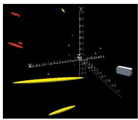<br />
(a)</p>
<p>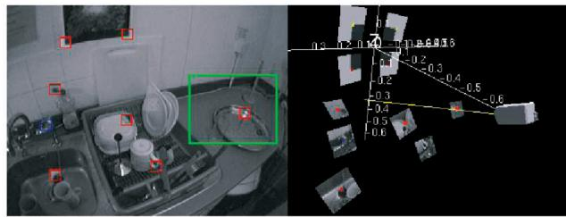<br />
(b)<br />
Fig. 1. (a) A snapshot of the probabilistic 3D map, showing camera position estimate and feature position uncertainty ellipsoids. In this, and other figures, in the paper the feature color code is as follows: red = successfully measured, blue = attempted but failed measurement, and yellow = not selected for measurement on this step. (b) Visually salient feature patches detected to serve as visual landmarks and the 3D planar regions deduced by back-projection to their estimated world locations. These planar regions are projected into future estimated camera positions to predict patch appearance from new viewpoints.</p>
<p>state vector <math xmlns="http://www.w3.org/1998/Math/MathML" display="inline"><mrow><mover accent="true"><mrow><mi mathvariant="bold">x</mi></mrow><mo>&#x0005E;</mo></mover></mrow></math> and covariance matrix P. State vector <math xmlns="http://www.w3.org/1998/Math/MathML" display="inline"><mrow><mover accent="true"><mrow><mi mathvariant="bold">x</mi></mrow><mo>&#x0005E;</mo></mover></mrow></math> is composed of the stacked state estimates of the camera and features and P is a square matrix of equal dimension which can be partitioned into submatrix elements as follows:</p>
<p><div class="math-block"><math xmlns="http://www.w3.org/1998/Math/MathML" display="block"><mrow><mtable><mtr><mtd columnalign="right"><mrow><mover accent="true"><mrow><mrow><mi mathvariant="bold">x</mi></mrow></mrow><mo>&#x0005E;</mo></mover><mo>&#x0003D;</mo><mrow><mo stretchy="true" fence="true" form="prefix">&#x00028;</mo><mtable><mtr><mtd columnalign="center"><mrow><msub><mover accent="true"><mrow><mrow><mi mathvariant="bold">x</mi></mrow></mrow><mo>&#x0005E;</mo></mover><mrow><mi>v</mi></mrow></msub></mrow></mtd></mtr><mtr><mtd columnalign="center"><mrow><msub><mover accent="true"><mrow><mrow><mi mathvariant="bold">y</mi></mrow></mrow><mo>&#x0005E;</mo></mover><mrow><mn>1</mn></mrow></msub></mrow></mtd></mtr><mtr><mtd columnalign="center"><mrow><msub><mover accent="true"><mrow><mrow><mi mathvariant="bold">y</mi></mrow></mrow><mo>&#x0005E;</mo></mover><mrow><mn>2</mn></mrow></msub></mrow></mtd></mtr><mtr><mtd columnalign="center"><mrow><mo>&#x022EE;</mo></mrow></mtd></mtr></mtable><mo stretchy="true" fence="true" form="postfix">&#x00029;</mo></mrow><mo>&#x0002C;</mo><mtext>&#x000A0;</mtext><mrow><mi mathvariant="normal">P</mi></mrow><mo>&#x0003D;</mo><mrow><mo stretchy="true" fence="true" form="prefix">[</mo><mtable><mtr><mtd columnalign="center"><mrow><msub><mrow><mi mathvariant="normal">P</mi></mrow><mrow><mi>x</mi><mi>x</mi></mrow></msub></mrow></mtd><mtd columnalign="center"><mrow><msub><mrow><mi mathvariant="normal">P</mi></mrow><mrow><mi>x</mi><msub><mi>y</mi><mrow><mn>1</mn></mrow></msub></mrow></msub></mrow></mtd><mtd columnalign="center"><mrow><msub><mrow><mi mathvariant="normal">P</mi></mrow><mrow><mi>x</mi><msub><mi>y</mi><mrow><mn>2</mn></mrow></msub></mrow></msub></mrow></mtd><mtd columnalign="center"><mrow><mi>\hdots</mi></mrow></mtd></mtr><mtr><mtd columnalign="center"><mrow><msub><mrow><mi mathvariant="normal">P</mi></mrow><mrow><msub><mi>y</mi><mrow><mn>1</mn></mrow></msub><mi>x</mi></mrow></msub></mrow></mtd><mtd columnalign="center"><mrow><msub><mrow><mi mathvariant="normal">P</mi></mrow><mrow><msub><mi>y</mi><mrow><mn>1</mn></mrow></msub><msub><mi>y</mi><mrow><mn>1</mn></mrow></msub></mrow></msub></mrow></mtd><mtd columnalign="center"><mrow><msub><mrow><mi mathvariant="normal">P</mi></mrow><mrow><msub><mi>y</mi><mrow><mn>1</mn></mrow></msub><msub><mi>y</mi><mrow><mn>2</mn></mrow></msub></mrow></msub></mrow></mtd><mtd columnalign="center"><mrow><mi>\hdots</mi></mrow></mtd></mtr><mtr><mtd columnalign="center"><mrow><msub><mrow><mi mathvariant="normal">P</mi></mrow><mrow><msub><mi>y</mi><mrow><mn>2</mn></mrow></msub><mi>x</mi></mrow></msub></mrow></mtd><mtd columnalign="center"><mrow><msub><mrow><mi mathvariant="normal">P</mi></mrow><mrow><msub><mi>y</mi><mrow><mn>2</mn></mrow></msub><msub><mi>y</mi><mrow><mn>1</mn></mrow></msub></mrow></msub></mrow></mtd><mtd columnalign="center"><mrow><msub><mrow><mi mathvariant="normal">P</mi></mrow><mrow><msub><mi>y</mi><mrow><mn>2</mn></mrow></msub><msub><mi>y</mi><mrow><mn>2</mn></mrow></msub></mrow></msub></mrow></mtd><mtd columnalign="center"><mrow><mi>\hdots</mi></mrow></mtd></mtr><mtr><mtd columnalign="center"><mrow><mo>&#x022EE;</mo></mrow></mtd><mtd columnalign="center"><mrow><mo>&#x022EE;</mo></mrow></mtd><mtd columnalign="center"><mrow><mo>&#x022EE;</mo></mrow></mtd><mtd columnalign="center"><mrow><mo>&#x022EE;</mo></mrow></mtd></mtr></mtable><mo stretchy="true" fence="true" form="postfix">]</mo></mrow><mo>&#x0002E;</mo></mrow></mtd></mtr></mtable></mrow></math></div></p>
<p>In doing this, the probability distribution over all map parameters is approximated as a single multivariate Gaussian distribution in a space of dimension equal to the total state vector size.</p>
<p>ð1Þ</p>
<p>Explicitly, the camera’s state vector <math xmlns="http://www.w3.org/1998/Math/MathML" display="inline"><mrow><msub><mrow><mi mathvariant="bold">x</mi></mrow><mrow><mi>v</mi></mrow></msub></mrow></math> comprises a metric 3D position vector <math xmlns="http://www.w3.org/1998/Math/MathML" display="inline"><mrow><msup><mrow><mi mathvariant="bold">r</mi></mrow><mrow><mi>W</mi></mrow></msup></mrow></math> , orientation quaternion <math xmlns="http://www.w3.org/1998/Math/MathML" display="inline"><mrow><msup><mrow><mi mathvariant="bold">q</mi></mrow><mrow><mi>R</mi><mi>W</mi></mrow></msup></mrow></math> , velocity vector <math xmlns="http://www.w3.org/1998/Math/MathML" display="inline"><mrow><msup><mrow><mi mathvariant="bold">v</mi></mrow><mrow><mi>W</mi></mrow></msup></mrow></math> , and angular velocity vector <math xmlns="http://www.w3.org/1998/Math/MathML" display="inline"><mrow><msup><mi>&#x003C9;</mi><mrow><mi>R</mi></mrow></msup></mrow></math> relative to a fixed world frame W and “robot” frame R carried by the camera (13 parameters):</p>
<p><div class="math-block"><math xmlns="http://www.w3.org/1998/Math/MathML" display="block"><mrow><mtable><mtr><mtd columnalign="right"><mrow><msub><mrow><mi mathvariant="bold">x</mi></mrow><mrow><mi>v</mi></mrow></msub><mo>&#x0003D;</mo><mrow><mo stretchy="true" fence="true" form="prefix">&#x00028;</mo><mtable><mtr><mtd columnalign="left"><mrow><msup><mrow><mi mathvariant="bold">r</mi></mrow><mrow><mi>W</mi></mrow></msup></mrow></mtd></mtr><mtr><mtd columnalign="left"><mrow><msup><mrow><mi mathvariant="bold">q</mi></mrow><mrow><mi>W</mi><mi>R</mi></mrow></msup></mrow></mtd></mtr><mtr><mtd columnalign="left"><mrow><msup><mrow><mi mathvariant="bold">v</mi></mrow><mrow><mi>W</mi></mrow></msup></mrow></mtd></mtr><mtr><mtd columnalign="left"><mrow><msup><mi>&#x003C9;</mi><mrow><mi>R</mi></mrow></msup></mrow></mtd></mtr></mtable><mo stretchy="true" fence="true" form="postfix">&#x00029;</mo></mrow><mo>&#x0002E;</mo></mrow></mtd></mtr></mtable></mrow></math><span style="float:right;color:var(--ink-40)">(ð2Þ)</span></div></p>
<p>In this work, feature states <math xmlns="http://www.w3.org/1998/Math/MathML" display="inline"><mrow><msub><mrow><mi mathvariant="bold">y</mi></mrow><mrow><mi>i</mi></mrow></msub></mrow></math> are the 3D position vectors of the locations of point features. Camera and feature geometry and coordinate frames are defined in Fig. 3a.</p>
<p>The role of the map is primarily to permit real-time localization rather than serve as a complete scene description, and we therefore aim to capture a sparse set of high-quality landmarks. We assume that the scene is rigid and that each landmark is a stationary world feature. Specifically, in this work, each landmark is assumed to correspond to a welllocalized point feature in 3D space. The camera is modeled as a rigid body needing translation and rotation parameters to describe its position and we also maintain estimates of its linear and angular velocity: This is important in our algorithm since we will make use of motion dynamics as will be explained in Section 3.4.</p>
<p>The map can be pictured as in Fig. 1a: All geometric estimates can be considered as surrounded by ellipsoidal regions representing uncertainty bounds (here corresponding to three standard deviations). What Fig. 1a cannot show is that the various ellipsoids are potentially correlated to various degrees: In sequential mapping, a situation which commonly occurs is that spatially close features which are often observed simultaneously by the camera will have position estimates whose difference (relative position) is very well-known, while the position of the group as a whole relative to the global coordinate frame may not be. This situation is represented in the map covariance matrix P by nonzero entries in the off-diagonal matrix blocks and comes about naturally through the operation of the algorithm.</p>
<p>The total size of the map representation is order <math xmlns="http://www.w3.org/1998/Math/MathML" display="inline"><mrow><mrow><mi mathvariant="normal">O</mi></mrow><mo stretchy="false">&#x00028;</mo><msup><mi>N</mi><mrow><mn>2</mn></mrow></msup><mo stretchy="false">&#x00029;</mo><mo>&#x0002E;</mo></mrow></math> where N is the number of features and the complete SLAM algorithm we use has <math xmlns="http://www.w3.org/1998/Math/MathML" display="inline"><mrow><mrow><mi mathvariant="normal">O</mi></mrow><mo stretchy="false">&#x00028;</mo><msup><mi>N</mi><mrow><mn>2</mn></mrow></msup><mo stretchy="false">&#x00029;</mo></mrow></math> complexity. This means that the number of features which can be maintained with realtime processing is bounded—in our system to around 100 in current 30 Hz implementation.</p>
<p>There are strong reasons why we have chosen, in this work, to use the “standard” single, full covariance EKF approach to SLAM rather than variants which use different probabilistic representations. As we have stated, our current goal is longterm, repeatable localization within restricted volumes. The pattern of observation of features in one of our maps is quite different from that seen in many other implementations of SLAM for robot mapping, such as [25], [34], or [22]. Those robots move largely through corridor-like topologies, following exploratory paths until they infrequently come back to places they have seen before, at that stage correcting drift around loops. Relatively ad hoc approaches can be taken to distributing the correction around the well-defined loops, whether this is through a chain of uncertain pose-to-pose transformations or submaps or by selecting from a potentially impoverished discrete set of trajectory hypotheses represented by a finite number of particles.</p>
<p>In our case, as a free camera moves and rotates in 3D around a restricted space, individual features will come in and out of the field of view in varying sequences, various subsets of features at different depths will be covisible as the camera rotates, and loops of many different sizes and interlinking patterns will be routinely closed. We have considered it very important to represent the detailed, flexible correlations which will arise between different parts of the map accurately. Within the class of known methods, this is only computationally feasible with a sparse map of features maintained within a single state vector and covariance matrix. One hundred well-chosen features turn out to be sufficient with careful map management to span a room. In our opinion, it remains to be proven whether a method (for instance, FastSLAM [22], [42]) which can cope with a much larger number of features, but represent eptember 16,2026 at 03:26:09 UTC from IEEE Xplore. Restrictions apply.</p>
<p>correlations less accurately will be able to give such good repeatable localization results in agile single camera SLAM.</p>
<h2>3.2 Natural Visual Landmarks</h2>
<p>Now, we turn specifically to the features which make up the map. We have followed the approach of Davison and Murray [5], [27], who showed that relatively large (11 - 11 pixels) image patches are able to serve as long-term landmark features, the large templates having more unique signatures than standard corner features. However, we extend the power of such features significantly by using the camera localization information we have available to improve matching over large camera displacements and rotations.</p>
<p>Salient image regions are originally detected automatically (at times and in locations guided by the strategies of Section 3.7) using the detection operator of Shi and Tomasi [43] from the monochrome images obtained from the camera (note that, in the current work, we use monochrome images primarily for reasons of efficiency). The goal is to be able to identify these same visual landmarks repeatedly during potentially extreme camera motions and, therefore, straightforward 2D template matching (as in [5]) is very limiting, as after only small degrees of camera rotation and translation the appearance of a landmark can change greatly. To improve on this, we make the approximation that each landmark lies on a locally planar surface—an approximation that will be very good in many cases and bad in others, but a great deal better than assuming that the appearance of the patch will not change at all. Further, since we do not know the orientation of this surface, we make the assignment that the surface normal is parallel to the vector from the feature to the camera at initialization (in Section 3.8, we will present a method for updating estimates of this normal direction). Once the 3D location, including depth, of a feature has been fully initialized using the method of Section 3.6, each feature is stored as an oriented planar texture (Fig. 1b). When making measurements of a feature from new camera positions, its patch can be projected from 3D to the image plane to produce a template for matching with the real image. This template will be a warped version of the original square template captured when the feature was first detected. In general, this will be a full projective warping, with shearing and perspective distortion, since we just send the template through backward and forward camera models. Even if the orientation of the surface on which the feature lies is not correct, the warping will still take care successfully of rotation about the cyclotorsion axis and scale (the degrees of freedom to which the SIFT descriptor is invariant) and some amount of other warping.</p>
<p>Fig. 2. (a) Matching the four known features of the initialization target on the first frame of tracking. The large circular search regions reflect the high uncertainty assigned to the starting camera position estimate. (b) Visualization of the model for “smooth” motion: At each camera position, we predict a most likely path together with alternatives with small deviations.<br />
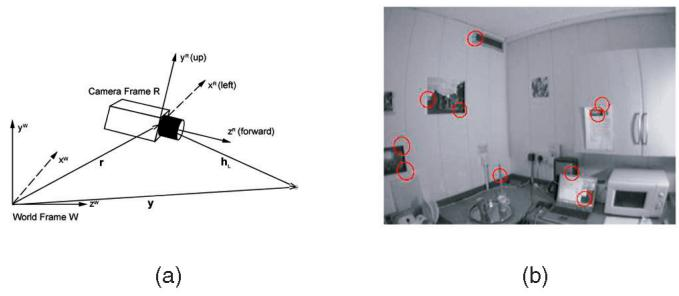<br />
Fig. 3. (a) Frames and vectors in camera and feature geometry. (b) Active search for features in the raw images from the wide-angle camera. Ellipses show the feature search regions derived from the uncertainty in the relative positions of camera and features and only these regions are searched.</p>
<p>Note that we do not update the saved templates for features over time—since the goal is repeatable localization, we need the ability to exactly remeasure the locations of features over arbitrarily long time periods. Templates which are updated over time will tend to drift gradually from their initial positions.</p>
<h2>3.3 System Initialization</h2>
<p>In most SLAM systems, the robot has no specific knowledge about the structure of the world around it when first switched on. It is free to define a coordinate frame within which to estimate its motion and build a map and the obvious choice is to fix this frame at the robot’s starting position, defined as the origin. In our single camera SLAM algorithm, we choose to aid system start-up with a small amount of prior information about the scene in the shape of a known target placed in front of the camera. This provides several features (typically four) with known positions and of known appearance. There are two main reasons for this:</p>
<ol>
<li>
<p>In single camera SLAM, with no direct way to measure feature depths or any odometry, starting from a target of known size allows us to assign a precise scale to the estimated map and motion— rather than running with scale as a completely unknown degree of freedom. Knowing the scale of the map is desirable whenever it must be related to other information such as priors on motion dynamics or features depths and makes it much more easy to use in real applications.</p>
</li>
<li>
<p>Having some features in the map right from the start means that we can immediately enter our normal predict-measure-update tracking sequence without any special first step. With a single camera, features cannot be initialized fully into the map after only one measurement because of their unknown depths and, therefore, within our standard framework we would be stuck without features to match to estimate the camera motion from frames one to two. (Of course, standard stereo algorithms provide a separate approach which could be used to bootstrap motion and structure estimation.)</p>
</li>
</ol>
<p>Fig. 2a shows the first step of tracking with a typical initialization target. The known features—in this case, the eptember 16,2026 at 03:26:09 UTC from IEEE Xplore. Restrictions apply.</p>
<p>corners of the black rectangle—have their measured positions placed into the map at system start-up with zero uncertainty. It is now these features which define the world coordinate frame for SLAM. On the first tracking frame, the camera is held in a certain approximately known location relative to the target for tracking to start. In the state vector the initial camera position is given an initial level of uncertainty corresponding to a few degrees and centimeters. This allows tracking to “lock on” very robustly in the first frame just by starting the standard tracking cycle.</p>
<h2>3.4 Motion Modeling and Prediction</h2>
<p>After start-up, the state vector is updated in two alternating ways: 1) the prediction step, when the camera moves in the “blind” interval between image capture and 2) the update step, after measurements have been achieved of features. In this section, we consider prediction.</p>
<p>Constructing a motion model for an agile camera which is carried by an unknown person, robot, or other moving body may, at first glance, seem to be fundamentally different to modeling the motion of a wheeled robot moving on a plane: The key difference is that, in the robot case, one is in possession of the control inputs driving the motion, such as “move forward 1 m with steering angle 5 degrees,” whereas we do not have such prior information about the agile camera’s movements. However, it is important to remember that both cases are just points on the continuum of types of model for representing physical systems. Every model must stop at some level of detail and a probabilistic assumption made about the discrepancy between this model and reality: This is what is referred to as process uncertainty (or noise). In the case of a wheeled robot, this uncertainty term takes account of factors such as potential wheel slippage, surface irregularities, and other predominantly unsystematic effects which have not been explicitly modeled. In the case of an agile camera, it takes account of the unknown dynamics and intentions of the human or robot carrier, but these too can be probabilistically modeled.</p>
<p>We currently use a “constant velocity, constant angular velocity model.” This means not that we assume that the camera moves at a constant velocity over all time, but that our statistical model of its motion in a time step is that on average we expect undetermined accelerations occur with a Gaussian profile. The model is visualized in Fig. 2b. The implication of this model is that we are imposing a certain smoothness on the camera motion expected: very large accelerations are relatively unlikely. This model is subtly effective and gives the whole system important robustness even when visual measurements are sparse.</p>
<p>We assume that, in each time step, unknown acceleration <math xmlns="http://www.w3.org/1998/Math/MathML" display="inline"><mrow><msup><mrow><mi mathvariant="bold">a</mi></mrow><mrow><mi>W</mi></mrow></msup></mrow></math> and angular acceleration <math xmlns="http://www.w3.org/1998/Math/MathML" display="inline"><mrow><mover><mrow><mi>&#x003B1;</mi></mrow><mrow><mi>&#x02022;</mi></mrow></mover><msup><mrow /><mrow><mi>&#x02032;</mi></mrow></msup></mrow></math> processes of zero mean and Gaussian distribution cause an impulse of velocity and angular velocity:</p>
<p><div class="math-block"><math xmlns="http://www.w3.org/1998/Math/MathML" display="block"><mrow><mrow><mi mathvariant="bold">n</mi></mrow><mo>&#x0003D;</mo><mrow><mo minsize="2.047em" maxsize="2.047em">&#x00028;</mo><mfrac linethickness="0"><mrow><msup><mrow><mi mathvariant="bold">V</mi></mrow><mrow><mi>W</mi></mrow></msup></mrow><mrow><msup><mi>&#x003A9;</mi><mrow><mi>R</mi></mrow></msup></mrow></mfrac><mo minsize="2.047em" maxsize="2.047em">&#x00029;</mo></mrow><mo>&#x0003D;</mo><mrow><mo minsize="2.047em" maxsize="2.047em">&#x00028;</mo><mfrac linethickness="0"><mrow><msup><mrow><mi mathvariant="bold">a</mi></mrow><mrow><mi>W</mi></mrow></msup><mi>&#x00394;</mi><mi>t</mi></mrow><mrow><msup><mi>&#x003B1;</mi><mrow><mi>R</mi></mrow></msup><mi>&#x00394;</mi><mi>t</mi></mrow></mfrac><mo minsize="2.047em" maxsize="2.047em">&#x00029;</mo></mrow><mo>&#x0002E;</mo></mrow></math><span style="float:right;color:var(--ink-40)">(ð3Þ)</span></div></p>
<p>Depending on the circumstances, <math xmlns="http://www.w3.org/1998/Math/MathML" display="inline"><mrow><msup><mrow><mi mathvariant="bold">V</mi></mrow><mrow><mi>W</mi></mrow></msup></mrow></math> and <math xmlns="http://www.w3.org/1998/Math/MathML" display="inline"><mrow><msup><mi>&#x003A9;</mi><mrow><mi>R</mi></mrow></msup></mrow></math> may be coupled together (for example, by assuming that a single force impulse is applied to the rigid shape of the body carrying the camera at every time step, producing correlated changes in its linear and angular velocity). Currently, however, we assume that the covariance matrix of the noise vector n is diagonal, representing uncorrelated noise in all linear and rotational components. The state update produced is:</p>
<p><div class="math-block"><math xmlns="http://www.w3.org/1998/Math/MathML" display="block"><mrow><msub><mrow><mi mathvariant="bold">f</mi></mrow><mrow><mi>v</mi></mrow></msub><mo>&#x0003D;</mo><mrow><mo stretchy="true" fence="true" form="prefix">&#x00028;</mo><mtable><mtr><mtd columnalign="left"><mrow><msubsup><mrow><mi mathvariant="bold">r</mi></mrow><mrow><mi>n</mi><mi>e</mi><mi>w</mi></mrow><mrow><mi>W</mi></mrow></msubsup></mrow></mtd></mtr><mtr><mtd columnalign="left"><mrow><msubsup><mrow><mi mathvariant="bold">q</mi></mrow><mrow><mi>n</mi><mi>e</mi><mi>w</mi></mrow><mrow><mi>W</mi><mi>R</mi></mrow></msubsup></mrow></mtd></mtr><mtr><mtd columnalign="left"><mrow><msubsup><mrow><mi mathvariant="bold">v</mi></mrow><mrow><mi>n</mi><mi>e</mi><mi>w</mi></mrow><mrow><mi>W</mi></mrow></msubsup></mrow></mtd></mtr><mtr><mtd columnalign="left"><mrow><msubsup><mi>&#x003C9;</mi><mrow><mi>n</mi><mi>e</mi><mi>w</mi></mrow><mrow><mi>R</mi></mrow></msubsup></mrow></mtd></mtr></mtable><mo stretchy="true" fence="true" form="postfix">&#x00029;</mo></mrow><mo>&#x0003D;</mo><mrow><mo stretchy="true" fence="true" form="prefix">&#x00028;</mo><mtable><mtr><mtd columnalign="left"><mrow><msup><mrow><mi mathvariant="bold">r</mi></mrow><mrow><mi>W</mi></mrow></msup><mo>&#x0002B;</mo><mo stretchy="false">&#x00028;</mo><msup><mrow><mi mathvariant="bold">v</mi></mrow><mrow><mi>W</mi></mrow></msup><mo>&#x0002B;</mo><msup><mrow><mi mathvariant="bold">V</mi></mrow><mrow><mi>W</mi></mrow></msup><mo stretchy="false">&#x00029;</mo><mi>&#x00394;</mi><mi>t</mi></mrow></mtd></mtr><mtr><mtd columnalign="left"><mrow><msup><mrow><mi mathvariant="bold">q</mi></mrow><mrow><mi>W</mi><mi>R</mi></mrow></msup><mo>&#x000D7;</mo><mrow><mi mathvariant="bold">q</mi></mrow><mo stretchy="false">&#x00028;</mo><mo stretchy="false">&#x00028;</mo><msup><mi>&#x003C9;</mi><mrow><mi>R</mi></mrow></msup><mo>&#x0002B;</mo><msup><mi>&#x003A9;</mi><mrow><mi>R</mi></mrow></msup><mo stretchy="false">&#x00029;</mo><mi>&#x00394;</mi><mi>t</mi><mo stretchy="false">&#x00029;</mo></mrow></mtd></mtr><mtr><mtd columnalign="left"><mrow><msup><mrow><mi mathvariant="bold">v</mi></mrow><mrow><mi>W</mi></mrow></msup><mo>&#x0002B;</mo><msup><mrow><mi mathvariant="bold">V</mi></mrow><mrow><mi>W</mi></mrow></msup></mrow></mtd></mtr><mtr><mtd columnalign="left"><mrow><msup><mi>&#x003C9;</mi><mrow><mi>R</mi></mrow></msup><mo>&#x0002B;</mo><msup><mi>&#x003A9;</mi><mrow><mi>R</mi></mrow></msup></mrow></mtd></mtr></mtable><mo stretchy="true" fence="true" form="postfix">&#x00029;</mo></mrow><mo>&#x0002E;</mo></mrow></math><span style="float:right;color:var(--ink-40)">(ð4Þ)</span></div></p>
<p>Here, the notation <math xmlns="http://www.w3.org/1998/Math/MathML" display="inline"><mrow><mrow><mi mathvariant="bold">q</mi></mrow><mo stretchy="false">&#x00028;</mo><mo stretchy="false">&#x00028;</mo><msup><mi>&#x003C9;</mi><mrow><mi>R</mi></mrow></msup><mo>&#x0002B;</mo><msup><mi>&#x003A9;</mi><mrow><mi>R</mi></mrow></msup><mo stretchy="false">&#x00029;</mo><mi>&#x00394;</mi><mi>t</mi><mo stretchy="false">&#x00029;</mo></mrow></math> denotes the quaternion trivially defined by the angle-axis rotation vector <math xmlns="http://www.w3.org/1998/Math/MathML" display="inline"><mrow><mo stretchy="false">&#x00028;</mo><msup><mi>&#x003C9;</mi><mrow><mi>R</mi></mrow></msup><mo>&#x0002B;</mo><msup><mi>&#x003A9;</mi><mrow><mi>R</mi></mrow></msup><mo stretchy="false">&#x00029;</mo><mi>&#x00394;</mi><mi>t</mi></mrow></math></p>
<p>In the EKF, the new state estimate <math xmlns="http://www.w3.org/1998/Math/MathML" display="inline"><mrow><msub><mrow><mi mathvariant="bold">f</mi></mrow><mrow><mi>v</mi></mrow></msub><mo stretchy="false">&#x00028;</mo><msub><mrow><mi mathvariant="bold">x</mi></mrow><mrow><mi>v</mi></mrow></msub><mo>&#x0002C;</mo><mrow><mi mathvariant="bold">u</mi></mrow><mo stretchy="false">&#x00029;</mo></mrow></math> must be accompanied by the increase in state uncertainty (process noise covariance) <math xmlns="http://www.w3.org/1998/Math/MathML" display="inline"><mrow><msub><mrow><mi mathvariant="sans-serif">Q</mi></mrow><mrow><mi>v</mi></mrow></msub></mrow></math> for the camera after this motion. We find <math xmlns="http://www.w3.org/1998/Math/MathML" display="inline"><mrow><msub><mrow><mi mathvariant="sans-serif">Q</mi></mrow><mrow><mi>v</mi></mrow></msub></mrow></math> via the Jacobian calculation:</p>
<p><div class="math-block"><math xmlns="http://www.w3.org/1998/Math/MathML" display="block"><mrow><msub><mrow><mi mathvariant="sans-serif">q</mi></mrow><mrow><mi>v</mi></mrow></msub><mo>&#x0003D;</mo><mfrac><mrow><mo>&#x02202;</mo><msub><mrow><mi mathvariant="bold">f</mi></mrow><mrow><mi>v</mi></mrow></msub></mrow><mrow><mo>&#x02202;</mo><mrow><mi mathvariant="bold">n</mi></mrow></mrow></mfrac><msub><mrow><mi mathvariant="sans-serif">P</mi></mrow><mrow><mi>n</mi></mrow></msub><msup><mfrac><mrow><mo>&#x02202;</mo><msub><mrow><mi mathvariant="bold">f</mi></mrow><mrow><mi>v</mi></mrow></msub></mrow><mrow><mo>&#x02202;</mo><mrow><mi mathvariant="bold">n</mi></mrow></mrow></mfrac><mrow><mo>&#x022A4;</mo></mrow></msup><mo>&#x0002C;</mo></mrow></math><span style="float:right;color:var(--ink-40)">(ð5Þ)</span></div></p>
<p>where <math xmlns="http://www.w3.org/1998/Math/MathML" display="inline"><mrow><msub><mrow><mi mathvariant="monospace">P</mi></mrow><mrow><mi>n</mi></mrow></msub></mrow></math> is the covariance of noise vector n. EKF implementation also requires calculation of the Jacobian <math xmlns="http://www.w3.org/1998/Math/MathML" display="inline"><mrow><mfrac><mrow><mo>&#x02202;</mo><msubsup><mrow><mi mathvariant="bold">f</mi></mrow><mrow><mi>v</mi></mrow><mrow><mo>&#x022C6;</mo></mrow></msubsup></mrow><mrow><mo>&#x02202;</mo><msub><mrow><mi mathvariant="bold">x</mi></mrow><mrow><mi>v</mi></mrow></msub></mrow></mfrac></mrow></math> . These Jacobian calculations are complicated but a tractable matter of differentiation; we do not present the results here.</p>
<p>The rate of growth of uncertainty in this motion model is determined by the size of <math xmlns="http://www.w3.org/1998/Math/MathML" display="inline"><mrow><msub><mrow><mi mathvariant="monospace">P</mi></mrow><mrow><mi>n</mi></mrow></msub></mrow></math> and setting these parameters to small or large values defines the smoothness of the motion we expect. With small <math xmlns="http://www.w3.org/1998/Math/MathML" display="inline"><mrow><msub><mrow><mrow><mi mathvariant="normal">P</mi></mrow></mrow><mrow><mi>n</mi></mrow></msub><mo>&#x0002C;</mo></mrow></math> we expect a very smooth motion with small accelerations, and would be well placed to track motions of this type, but unable to cope with sudden rapid movements. High <math xmlns="http://www.w3.org/1998/Math/MathML" display="inline"><mrow><msub><mrow><mi mathvariant="monospace">P</mi></mrow><mrow><mi>n</mi></mrow></msub></mrow></math> means that the uncertainty in the system increases significantly at each time step and while this gives the ability to cope with rapid accelerations the very large uncertainty means that a lot of good measurements must be made at each time step to constrain estimates.</p>
<h2>3.5 Active Feature Measurement and Map Update</h2>
<p>In this section, we consider the process of measuring a feature already in the SLAM map (we will discuss initialization in the next section).</p>
<p>A key part of our approach is to predict the image position of each feature before deciding which to measure. Feature matching itself is carried out using a straightforward normalized cross-correlation search for the template patch projected into the current camera estimate using the method of Section 3.2 and the image data—the template is scanned over the image and tested for a match at each location until a peak is found. This searching for a match is computationally expensive; prediction is an active approach, narrowing search to maximize efficiency.</p>
<p>First, using the estimates, <math xmlns="http://www.w3.org/1998/Math/MathML" display="inline"><mrow><msub><mrow><mi mathvariant="bold">x</mi></mrow><mrow><mi>v</mi></mrow></msub></mrow></math> of camera position and <math xmlns="http://www.w3.org/1998/Math/MathML" display="inline"><mrow><msub><mrow><mi mathvariant="bold">y</mi></mrow><mrow><mi>i</mi></mrow></msub></mrow></math> of feature position, the position of a point feature relative to the camera is expected to be:</p>
<p><div class="math-block"><math xmlns="http://www.w3.org/1998/Math/MathML" display="block"><mrow><msubsup><mrow><mi mathvariant="bold">h</mi></mrow><mrow><mi>L</mi></mrow><mrow><mi>R</mi></mrow></msubsup><mo>&#x0003D;</mo><msup><mrow><mi mathvariant="double-struck">R</mi></mrow><mrow><mi>R</mi><mi>W</mi></mrow></msup><mo stretchy="false">&#x00028;</mo><msubsup><mrow><mi mathvariant="bold">y</mi></mrow><mrow><mi>i</mi></mrow><mrow><mi>W</mi></mrow></msubsup><mo>&#x02212;</mo><msup><mrow><mi mathvariant="bold">r</mi></mrow><mrow><mi>W</mi></mrow></msup><mo stretchy="false">&#x00029;</mo><mo>&#x0002E;</mo></mrow></math><span style="float:right;color:var(--ink-40)">(ð6Þ)</span></div></p>
<p>With a perspective camera, the position <math xmlns="http://www.w3.org/1998/Math/MathML" display="inline"><mrow><mo stretchy="false">&#x00028;</mo><mi>u</mi><mo>&#x0002C;</mo><mi>v</mi><mo stretchy="false">&#x00029;</mo></mrow></math> at which the feature would be expected to be found in the image is found using the standard pinhole model:</p>
<p><div class="math-block"><math xmlns="http://www.w3.org/1998/Math/MathML" display="block"><mrow><msub><mrow><mi mathvariant="bold">h</mi></mrow><mrow><mi>i</mi></mrow></msub><mo>&#x0003D;</mo><mo minsize="2.047em" maxsize="2.047em">&#x00028;</mo><mfrac linethickness="0"><mrow><mi>u</mi></mrow><mrow><mi>v</mi></mrow></mfrac><mo minsize="2.047em" maxsize="2.047em">&#x00029;</mo><mo>&#x0003D;</mo><mo minsize="2.047em" maxsize="2.047em">&#x00028;</mo><mfrac linethickness="0"><mrow><msub><mi>u</mi><mrow><mn>0</mn></mrow></msub><mo>&#x02212;</mo><mi>f</mi><msub><mi>k</mi><mrow><mi>u</mi></mrow></msub><mfrac><mrow><msubsup><mi>h</mi><mrow><mi>L</mi><mi>x</mi></mrow><mrow><mi>R</mi></mrow></msubsup></mrow><mrow><msubsup><mi>h</mi><mrow><mi>L</mi><mi>z</mi></mrow><mrow><mi>R</mi></mrow></msubsup></mrow></mfrac></mrow><mrow><msub><mi>v</mi><mrow><mn>0</mn></mrow></msub><mo>&#x02212;</mo><mi>f</mi><msub><mi>k</mi><mrow><mi>v</mi></mrow></msub><mfrac><mrow><msubsup><mi>h</mi><mrow><mi>L</mi><mi>y</mi></mrow><mrow><mi>R</mi></mrow></msubsup></mrow><mrow><msubsup><mi>h</mi><mrow><mi>L</mi><mi>z</mi></mrow><mrow><mi>R</mi></mrow></msubsup></mrow></mfrac></mrow></mfrac><mo minsize="2.047em" maxsize="2.047em">&#x00029;</mo><mo>&#x0002C;</mo></mrow></math><span style="float:right;color:var(--ink-40)">(ð7Þ)</span></div></p>
<p>where <math xmlns="http://www.w3.org/1998/Math/MathML" display="inline"><mrow><mi>f</mi><msub><mi>k</mi><mrow><mi>u</mi></mrow></msub><mo>&#x0002C;</mo><mi>f</mi><msub><mi>k</mi><mrow><mi>v</mi></mrow></msub><mo>&#x0002C;</mo><msub><mi>u</mi><mrow><mn>0</mn></mrow></msub><mo>&#x0002E;</mo></mrow></math> , and <math xmlns="http://www.w3.org/1998/Math/MathML" display="inline"><mrow><msub><mi>v</mi><mrow><mn>0</mn></mrow></msub></mrow></math> are the standard camera calibration parameters.</p>
<p>In the current work, however, we are using wide-angle cameras with fields of view of nearly 100 degrees since showing in [6] that the accuracy of SLAM is significantly improved by trading per-pixel angular resolution for increased field of view—camera and map estimates are much better constrained when features at very different viewing angles can be simultaneously observed. The imaging characteristics of such cameras are not well approximated as perspective—as Fig. 3b shows, their images show significant nonperspective distortion (straight lines in the 3D world do not project to straight lines in the image). Nevertheless, we perform feature matching on these raw images rather than undistorting them first (note that the images later must be transformed to a perspective projection for display in order to use them for augmented reality since OpenGL only supports perspective camera models).</p>
<p>We therefore warp the perspective-projected coordinates <math xmlns="http://www.w3.org/1998/Math/MathML" display="inline"><mrow><mrow><mi mathvariant="bold">u</mi></mrow><mo>&#x0003D;</mo><mo stretchy="false">&#x00028;</mo><mi>u</mi><mo>&#x0002C;</mo><mi>v</mi><mo stretchy="false">&#x00029;</mo></mrow></math> with a radial distortion to obtain the final predicted image position <math xmlns="http://www.w3.org/1998/Math/MathML" display="inline"><mrow><msub><mrow><mi mathvariant="bold">u</mi></mrow><mrow><mi>d</mi></mrow></msub><mo>&#x0003D;</mo><mo stretchy="false">&#x00028;</mo><msub><mi>u</mi><mrow><mi>d</mi></mrow></msub><mo>&#x0002C;</mo><msub><mi>v</mi><mrow><mi>d</mi></mrow></msub><mo stretchy="false">&#x00029;</mo></mrow></math> : The following radial distortion model was chosen because, to a good approximation, it is invertible [44]:</p>
<p><div class="math-block"><math xmlns="http://www.w3.org/1998/Math/MathML" display="block"><mrow><msub><mi>u</mi><mrow><mi>d</mi></mrow></msub><mo>&#x02212;</mo><msub><mi>u</mi><mrow><mn>0</mn></mrow></msub><mo>&#x0003D;</mo><mfrac><mrow><mi>u</mi><mo>&#x02212;</mo><msub><mi>u</mi><mrow><mn>0</mn></mrow></msub></mrow><mrow><msqrt><mrow><mn>1</mn><mo>&#x0002B;</mo><mn>2</mn><msub><mi>K</mi><mrow><mn>1</mn></mrow></msub><msup><mi>r</mi><mrow><mn>2</mn></mrow></msup></mrow></msqrt></mrow></mfrac><mo>&#x0002C;</mo></mrow></math><span style="float:right;color:var(--ink-40)">(ð8Þ)</span></div></p>
<p><div class="math-block"><math xmlns="http://www.w3.org/1998/Math/MathML" display="block"><mrow><msub><mi>v</mi><mrow><mi>d</mi></mrow></msub><mo>&#x02212;</mo><msub><mi>v</mi><mrow><mn>0</mn></mrow></msub><mo>&#x0003D;</mo><mfrac><mrow><mi>v</mi><mo>&#x02212;</mo><msub><mi>v</mi><mrow><mn>0</mn></mrow></msub></mrow><mrow><msqrt><mrow><mn>1</mn><mo>&#x0002B;</mo><mn>2</mn><msub><mi>K</mi><mrow><mn>1</mn></mrow></msub><msup><mi>r</mi><mrow><mn>2</mn></mrow></msup></mrow></msqrt></mrow></mfrac><mo>&#x0002C;</mo></mrow></math><span style="float:right;color:var(--ink-40)">(ð9Þ)</span></div></p>
<p>where</p>
<p><div class="math-block"><math xmlns="http://www.w3.org/1998/Math/MathML" display="block"><mrow><mi>r</mi><mo>&#x0003D;</mo><msqrt><mrow><msup><mrow><mo stretchy="true" fence="true" form="prefix">&#x00028;</mo><mi>u</mi><mo>&#x02212;</mo><msub><mi>u</mi><mrow><mn>0</mn></mrow></msub><mo stretchy="true" fence="true" form="postfix">&#x00029;</mo></mrow><mrow><mn>2</mn></mrow></msup><mo>&#x0002B;</mo><msup><mrow><mo stretchy="true" fence="true" form="prefix">&#x00028;</mo><mi>v</mi><mo>&#x02212;</mo><msub><mi>v</mi><mrow><mn>0</mn></mrow></msub><mo stretchy="true" fence="true" form="postfix">&#x00029;</mo></mrow><mrow><mn>2</mn></mrow></msup></mrow></msqrt><mo>&#x0002E;</mo></mrow></math><span style="float:right;color:var(--ink-40)">(ð10Þ)</span></div></p>
<p>Typical values from a calibration of the camera used in Section <math xmlns="http://www.w3.org/1998/Math/MathML" display="inline"><mrow><msup><mi /><mrow><mn>4</mn><mo>&#x0002C;</mo></mrow></msup></mrow></math> calibrated using standard software and a calibration grid, were <math xmlns="http://www.w3.org/1998/Math/MathML" display="inline"><mrow><mi>f</mi><msub><mi>k</mi><mrow><mi>u</mi></mrow></msub><mo>&#x0003D;</mo><mi>f</mi><msub><mi>k</mi><mrow><mi>v</mi></mrow></msub><mo>&#x0003D;</mo><mn>1</mn><mn>9</mn><mn>5</mn></mrow></math> pixels, <math xmlns="http://www.w3.org/1998/Math/MathML" display="inline"><mrow><mo stretchy="false">&#x00028;</mo><msub><mi>u</mi><mrow><mn>0</mn></mrow></msub><mo>&#x0002C;</mo><msub><mi>v</mi><mrow><mn>0</mn></mrow></msub><mo stretchy="false">&#x00029;</mo><mo>&#x0003D;</mo><mo stretchy="false">&#x00028;</mo><mn>1</mn><mn>6</mn><mn>2</mn><mo>&#x0002C;</mo><mn>1</mn><mn>2</mn><mn>5</mn><mo stretchy="false">&#x00029;</mo></mrow></math> Þ, <math xmlns="http://www.w3.org/1998/Math/MathML" display="inline"><mrow><msub><mi>K</mi><mrow><mn>1</mn></mrow></msub><mo>&#x0003D;</mo><mn>6</mn><mo>&#x000D7;</mo><mn>1</mn><msup><mn>0</mn><mrow><mo>&#x02212;</mo><mn>6</mn></mrow></msup></mrow></math> for capture at <math xmlns="http://www.w3.org/1998/Math/MathML" display="inline"><mrow><mn>3</mn><mn>2</mn><mn>0</mn><mo>&#x000D7;</mo><mn>2</mn><mn>4</mn><mn>0</mn></mrow></math> resolution.</p>
<p>The Jacobians of this two-step projection function with respect to camera and feature positions are also computed (this is a straightforward matter of differentiation easily performed on paper or in software). These allow calculation of the uncertainty in the prediction of the feature image location, represented by the symmetric <math xmlns="http://www.w3.org/1998/Math/MathML" display="inline"><mrow><mn>2</mn><mo>&#x000D7;</mo><mn>2</mn></mrow></math> innovation covariance matrix <math xmlns="http://www.w3.org/1998/Math/MathML" display="inline"><mrow><msub><mrow><mi mathvariant="sans-serif">S</mi></mrow><mrow><mi>i</mi></mrow></msub><mi>&#x0003A;</mi></mrow></math></p>
<p><div class="math-block"><math xmlns="http://www.w3.org/1998/Math/MathML" display="block"><mrow><mtable><mtr><mtd columnalign="right"><mrow><msub><mrow><mrow><mi mathvariant="bold">S</mi></mrow></mrow><mrow><mi>i</mi></mrow></msub><mo>&#x0003D;</mo><mfrac><mrow><mo>&#x02202;</mo><msub><mrow><mrow><mi mathvariant="bold">u</mi></mrow></mrow><mrow><mi>d</mi><mi>i</mi></mrow></msub></mrow><mrow><mo>&#x02202;</mo><msub><mrow><mrow><mi mathvariant="bold">x</mi></mrow></mrow><mrow><mi>v</mi></mrow></msub></mrow></mfrac><msub><mrow><mrow><mi mathvariant="double-struck">P</mi></mrow></mrow><mrow><mi>x</mi><mi>x</mi></mrow></msub><mfrac><mrow><mo>&#x02202;</mo><msubsup><mrow><mrow><mi mathvariant="bold">u</mi></mrow></mrow><mrow><mi>d</mi><mi>i</mi></mrow><mrow><mo>&#x022A4;</mo></mrow></msubsup></mrow><mrow><mo>&#x02202;</mo><msub><mrow><mrow><mi mathvariant="bold">x</mi></mrow></mrow><mrow><mi>v</mi></mrow></msub></mrow></mfrac><mo>&#x0002B;</mo><mfrac><mrow><mo>&#x02202;</mo><msub><mrow><mrow><mi mathvariant="bold">u</mi></mrow></mrow><mrow><mi>d</mi><mi>i</mi></mrow></msub></mrow><mrow><mo>&#x02202;</mo><msub><mrow><mrow><mi mathvariant="bold">x</mi></mrow></mrow><mrow><mi>v</mi></mrow></msub></mrow></mfrac><msub><mrow><mrow><mi mathvariant="double-struck">P</mi></mrow></mrow><mrow><mi>x</mi><msub><mi>y</mi><mrow><mi>i</mi></mrow></msub></mrow></msub><mfrac><mrow><mo>&#x02202;</mo><msubsup><mrow><mrow><mi mathvariant="bold">u</mi></mrow></mrow><mrow><mi>d</mi><mi>i</mi></mrow><mrow><mo>&#x022A4;</mo></mrow></msubsup></mrow><mrow><mo>&#x02202;</mo><msub><mrow><mrow><mi mathvariant="bold">y</mi></mrow></mrow><mrow><mi>i</mi></mrow></msub></mrow></mfrac><mo>&#x0002B;</mo><mfrac><mrow><mo>&#x02202;</mo><msub><mrow><mrow><mi mathvariant="bold">u</mi></mrow></mrow><mrow><mi>d</mi><mi>i</mi></mrow></msub></mrow><mrow><mo>&#x02202;</mo><msub><mrow><mrow><mi mathvariant="bold">y</mi></mrow></mrow><mrow><mi>i</mi></mrow></msub></mrow></mfrac><msub><mrow><mrow><mi mathvariant="double-struck">P</mi></mrow></mrow><mrow><msub><mi>y</mi><mrow><mi>i</mi></mrow></msub><mi>x</mi></mrow></msub><mfrac><mrow><mo>&#x02202;</mo><msubsup><mrow><mrow><mi mathvariant="bold">u</mi></mrow></mrow><mrow><mi>d</mi><mi>i</mi></mrow><mrow><mo>&#x022A4;</mo></mrow></msubsup></mrow><mrow><mo>&#x02202;</mo><msub><mrow><mrow><mi mathvariant="bold">x</mi></mrow></mrow><mrow><mi>v</mi></mrow></msub></mrow></mfrac></mrow></mtd></mtr><mtr><mtd columnalign="right"><mrow><mo>&#x0002B;</mo><mfrac><mrow><mo>&#x02202;</mo><msub><mrow><mrow><mi mathvariant="bold">u</mi></mrow></mrow><mrow><mi>d</mi><mi>i</mi></mrow></msub></mrow><mrow><mo>&#x02202;</mo><msub><mrow><mrow><mi mathvariant="bold">y</mi></mrow></mrow><mrow><mi>i</mi></mrow></msub></mrow></mfrac><msub><mrow><mrow><mi mathvariant="double-struck">P</mi></mrow></mrow><mrow><msub><mi>y</mi><mrow><mi>i</mi></mrow></msub><msub><mi>y</mi><mrow><mi>i</mi></mrow></msub></mrow></msub><mfrac><mrow><mo>&#x02202;</mo><msubsup><mrow><mrow><mi mathvariant="bold">u</mi></mrow></mrow><mrow><mi>d</mi><mi>i</mi></mrow><mrow><mo>&#x022A4;</mo></mrow></msubsup></mrow><mrow><mo>&#x02202;</mo><msub><mrow><mrow><mi mathvariant="bold">y</mi></mrow></mrow><mrow><mi>i</mi></mrow></msub></mrow></mfrac><mo>&#x0002B;</mo><mrow><mrow><mi mathvariant="bold">R</mi></mrow></mrow><mo>&#x0002E;</mo></mrow></mtd></mtr></mtable></mrow></math><span style="float:right;color:var(--ink-40)">(ð11Þ)</span></div></p>
<p>The constant noise covariance R of measurements is taken to be diagonal with magnitude determined by image resolution.</p>
<p>Knowledge of <math xmlns="http://www.w3.org/1998/Math/MathML" display="inline"><mrow><msub><mrow><mi mathvariant="sans-serif">S</mi></mrow><mrow><mi>i</mi></mrow></msub></mrow></math> is what permits a fully active approach to image search; <math xmlns="http://www.w3.org/1998/Math/MathML" display="inline"><mrow><msub><mrow><mi mathvariant="sans-serif">S</mi></mrow><mrow><mi>i</mi></mrow></msub></mrow></math> represents the shape of a 2D Gaussian PDF over image coordinates and choosing a number of standard deviations (gating, normally at 3) defines an elliptical search window within which the feature should lie with high probability. In our system, correlation searches always occur within gated search regions, maximizing efficiency and minimizing the chance of mismatches. See Fig. 3b.</p>
<p>S has a further role in active search; it is a measure of the information content expected of a measurement. Feature searches with high <math xmlns="http://www.w3.org/1998/Math/MathML" display="inline"><mrow><msub><mrow><mi mathvariant="sans-serif">S</mi></mrow><mrow><mi>i</mi></mrow></msub></mrow></math> (where the result is difficult to predict) will provide more information [45] about estimates of camera and feature positions. In Davison and Murray’s work on vision-based SLAM for a robot with steerable cameras [27] this led directly to active control of the viewing direction toward profitable measurements; here we cannot control the camera movement, but in the case that many candidate measurements are available we select those with high innovation covariance, limiting the maximum number of feature searches per frame to the 10 or 12 most informative. Choosing measurements like this aims to squash the uncertainty in the system along the longest axis available and helps ensures that no particular component of uncertainty in the estimated state gets out of hand.</p>
<p>The obvious points of comparison for our active search technique are very fast bottom-up feature detection algorithms, which treat an image indiscriminately, but can extract all of the features in it in a few milliseconds. With active search, we will always be able to reduce the amount of image processing work, but at the potentially significant cost of extra calculations to work out where to search [45]. We do not claim that active search is sensible if the camera were to become lost—a different process would be needed to relocalize in the presence of very high uncertainty.</p>
<h2>3.6 Feature Initialization</h2>
<p>With our monocular camera, the feature measurement model cannot be directly inverted to give the position of a new feature given an image measurement and the camera position since the feature depth is unknown. Estimating the depth of a feature will require camera motion and several measurements from different viewpoints. However, we avoid the approach of tracking the new feature in the image for several frames without attempting to estimate its 3D location at all, then performing a minibatch estimation step to initialize its depth from multiple view triangulation. This would violate our top-down methodology and waste available information: 2D tracking is potentially very difficult when the camera is moving fast. Additionally, we will commonly need to initialize features very quickly because a camera with a narrow field of view may soon pass them by.</p>
<p>The method we use instead after the identification and first measurement of a new feature is to initialize a 3D line into the map along which the feature must lie. This is a semiinfinite line, starting at the estimated camera position and heading to infinity along the feature viewing direction, and like other map members has Gaussian uncertainty in its parameters. Its representation in the SLAM map is:</p>
<p><div class="math-block"><math xmlns="http://www.w3.org/1998/Math/MathML" display="block"><mrow><msub><mrow><mi mathvariant="bold">y</mi></mrow><mrow><mi>p</mi><mi>i</mi></mrow></msub><mo>&#x0003D;</mo><mrow><mo stretchy="true" fence="true" form="prefix">&#x00028;</mo><mtable><mtr><mtd columnalign="left"><mrow><msubsup><mrow><mi mathvariant="bold">r</mi></mrow><mrow><mi>i</mi></mrow><mrow><mi>W</mi></mrow></msubsup></mrow></mtd></mtr><mtr><mtd columnalign="left"><mrow><msubsup><mover accent="true"><mrow><mrow><mi mathvariant="bold">h</mi></mrow></mrow><mo>&#x0005E;</mo></mover><mrow><mi>i</mi></mrow><mrow><mi>W</mi></mrow></msubsup></mrow></mtd></mtr></mtable><mo stretchy="true" fence="true" form="postfix">&#x00029;</mo></mrow><mo>&#x0002C;</mo></mrow></math></div></p>
<p>where <math xmlns="http://www.w3.org/1998/Math/MathML" display="inline"><mrow><msub><mrow><mi mathvariant="bold">r</mi></mrow><mrow><mi>i</mi></mrow></msub></mrow></math> is the position of its one end and <math xmlns="http://www.w3.org/1998/Math/MathML" display="inline"><mrow><msubsup><mover accent="true"><mrow><mrow><mi mathvariant="bold">h</mi></mrow></mrow><mo>&#x0005E;</mo></mover><mrow><mi>i</mi></mrow><mrow><mi>W</mi></mrow></msubsup></mrow></math> is a unit vector describing its direction.</p>
<p>All possible 3D locations of the feature point lie somewhere along this line, but we are left with one degree of freedom of its position undetermined—its depth or distance along the line from the endpoint. A set of discrete depth hypotheses is uniformly distributed along this line, which can be thought of as a one-dimensional probability density over depth represented by a 1D particle distribution or histogram. Now, we make the approximation that over the next few timesteps as this new feature is reobserved, measurements of its image location provide information only about this depth eptember 16,2026 at 03:26:09 UTC from IEEE Xplore. Restrictions apply.</p>
<p>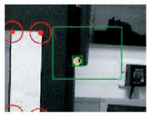<br />
0.000s</p>
<p>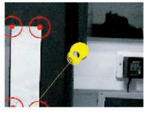<br />
0.033s</p>
<p>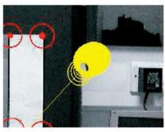<br />
0.066s</p>
<p>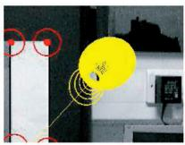<br />
0.100s</p>
<p>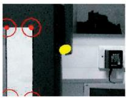<br />
0.133s</p>
<p>Fig. 4. A close-up view of image search in successive frames during feature initialization. In the first frame, a candidate feature image patch is identified within a search region. A 3D ray along which the feature must lie is added to the SLAM map, and this ray is projected into subsequent images. A distribution of depth hypotheses from 0.5 m to 5 m translates via the uncertainty in the new camera position relative to the ray into a set of ellipses which are all searched to produce likelihoods for Bayesian reweighting of the depth distribution. A small number of time-steps is normally sufficient to reduce depth uncertainly sufficiently to approximate as Gaussian and enable the feature to be converted to a fully-initialized poin representation.</p>
<p>coordinate, and that their effect on the parameters of the line is negligible. This is a good approximation because the amount of uncertainty in depth is very large compared with the uncertainty in the line’s direction. While the feature is represented in this way with a line and set of depth hypotheses we refer to it as partially initialized. Once we have obtained a good depth estimate in the form of a peaked depth PDF, we convert the feature to “fully initialized” with a standard 3D Gaussian representation.</p>
<p>At each subsequent time step, the hypotheses are all tested by projecting them into the image, where each is instantiated as an elliptical search region. The size and shape of each ellipse is determined by the uncertain parameters of the line: Each discrete hypothesis at depth  has 3D world location <math xmlns="http://www.w3.org/1998/Math/MathML" display="inline"><mrow><msub><mrow><mi mathvariant="bold">y</mi></mrow><mrow><mi>&#x003BB;</mi><mi>i</mi></mrow></msub><mo>&#x0003D;</mo><msubsup><mrow><mi mathvariant="bold">r</mi></mrow><mrow><mi>i</mi></mrow><mrow><mi>W</mi></mrow></msubsup><mo>&#x0002B;</mo><mi>&#x003BB;</mi><msubsup><mover accent="true"><mrow><mrow><mi mathvariant="bold">h</mi></mrow></mrow><mo>&#x0005E;</mo></mover><mrow><mi>i</mi></mrow><mrow><mi>W</mi></mrow></msubsup></mrow></math> . This location is projected into the image via the standard measurement function and relevant Jacobians of Section 3.5 to obtain the search ellipse for each depth. Note that, in the case of a nonperspective camera (such as the wideangle cameras we normally use), the centers of the ellipses will not lie along a straight line, but a curve. This does not present a problem as we treat each hypothesis separately.</p>
<p>We use an efficient algorithm to make correlation searches for the same feature template over this set of ellipses, which will typically be significantly overlapping (the algorithm builds a look-up table of correlation scores so that image processing work is not repeated for the overlapping regions). Feature matching within each ellipse produces a likelihood for each, and their probabilities are reweighted via Bayes’ rule: The likelihood score is simply the probability indicated by the 2D Gaussian PDF in image space implied by the elliptical search region. Note that, in the case of many small ellipses with relatively small overlaps (true when the camera localization estimate is very good), we get much more resolving power between different depth hypotheses than when larger, significantly overlapping ellipses are observed, and this affects the speed at which the depth distribution will collapse to a peak.</p>
<p>Fig. 4 illustrates the progress of the search over several frames and Fig. 5 shows a typical evolution of the distribution over time, from uniform prior to sharp peak. When the ratio of the standard deviation of depth to depth estimate drops below a threshold (currently 0.3), the distribution is safely approximated as Gaussian and the feature initialized as a point into the map. Features which have just crossed this threshold typically retain large depth uncertainty (see Fig. 1a which shows several uncertainty ellipsoids elongated along the approximate camera viewing direction), but this shrinks quickly as the camera moves and further standard measurements are obtained.</p>
<p>The important factor of this initialization is the shape of the search regions generated by the overlapping ellipses. A depth prior has removed the need to search along the entire epipolar line and improved the robustness and speed of initialization. In real-time implementation, the speed of collapse of the particle distribution is aided (and correlation search work saved) by deterministic pruning of the weakest hypotheses at each step, and during typical motions around 2-4 frames is sufficient. It should be noted that most of the experiments we have carried out have involved mostly sideways camera motions and this initialization approach would perform more poorly with motions along the optic axis where little parallax is measured.</p>
<p>Since the initialization algorithm of this section was first published in [5], some interesting developments to the essential idea have been published. In particular, Sola` et al. [46] have presented an algorithm which represents the uncertainty in a just-initialized feature by a set of overlapping 3D Gaussian distributions spaced along the 3D initialization line. Appealing aspects of this approach are first the distribution of the Gaussians, which is uniform in inverse depth rather than uniform in depth as in our technique—this appears to be a more efficient use of multiple samples. Also, their technique allows measurements of new features immediately to have an effect on refining the camera localization estimate, improving on our need to wait until the feature is “fully-initialized.” Most recently, Montiel et al. [47] have shown that a reparametrization in terms of inverse depth permits even more straightforward and efficient initialization within the standard EKF framework, in an approach similar to that used by Eade and Drummond [42] in a new FastSLAM-based monocular SLAM system.</p>
<p>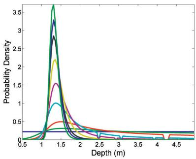<br />
Fig. 5. Frame-by-frame evolution of the probability density over feature depth represented by a particle set. One hundred equally-weighted particles are initially spread evenly along the range 0.5 m to 5.0 m; with each subsequent image measurement the distribution becomes more closely Gaussian.</p>
<h2>3.7 Map Management</h2>
<p>An important part of the overall algorithm is sensible management of the number of features in the map, and onthe-fly decisions need to be made about when new features should beidentified andinitialized, aswell aswhenitmight be necessary to delete a feature. Our map-maintenance criterion aims to keep the number of reliable features visible from any cameralocation close to a predetermined valuedetermined by the specifics of the measurement process, the required localization accuracy and the computing power available: we have found that with a wide-angle camera a number in the region of 12 gives accurate localization without overburdening the processor. An important part of our future work plan is to put heuristics such as this on a firm theoretical footing using methods from information theory as discussed in [45].</p>
<p>Feature “visibility” (more accurately, predicted measurability) is calculated based on the relative position of the camera and feature and the saved position of the camera from which the feature was initialized. The feature must be predicted to lie within the image, but also the camera must not have translated too far from its initialization viewpoint of the feature or we would expect correlation to fail (note that we can cope with a full range of rotation). Features are added to the map only if the number visible in the area the camera is passing through is less than this threshold—it is undesirable to increase the number of features and add to the computational complexity of filtering without good reason. Features are detected by running the image interest operator of Shi and Tomasi to locate the best candidate within a box of limited size (around 80 - 60 pixels) placed within the image. The position of the search box is currently chosen randomly, with the constraints only that it should not overlap with any existing features and that based on the current estimates of camera velocity and angular velocity any detected features are not expected to disappear from the field of view immediately.</p>
<p>A feature is deleted from the map if, after a predetermined number of detection and matching attempts when the feature should be visible, more than a fixed proportion (in our work, 50 percent) are failures. This criterion prunes features which are “bad” for a number of possible reasons: They are not true 3D points (lying at occlusion boundaries such as T-junctions), lie on moving objects, are caused by specular highlights on a curved surface, or importantly are just often occluded.</p>
<p>Over a period oftime, a “natural selection” offeatures takes place through these map management criteria which leads to a map of stable, static, widely-observable point features. Clutter in the scene can be dealt with even if it sometimes occludes these landmarks since attempted measurements of the occluded landmarks simply fail and do not lead to a filter update. Problems only arise if mismatches occur due to a similarity in appearance between clutter and landmarks and this can potentially lead to catastrophic failure. Note, however, that mismatches of any kind are extremely rare during periods of good tracking since the large feature templates give a high degree of uniqueness and the active search method means that matching is usually only attempted within very small image regions (typically, 15-20 pixels across).</p>
<p>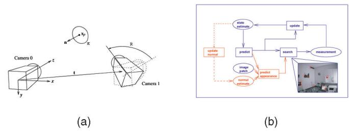<br />
Fig. 6. (a) Geometry of a camera in two positions observing a surface with normal n. (b) Processing cycle for estimating the 3D orientation of planar feature surfaces.</p>
<h2>3.8 Feature Orientation Estimation</h2>
<p>In Section 3.2, we described how visual patch features extracted from the image stream are inserted into the map as oriented, locally-planar surfaces, but explained that the orientations of these surfaces are initially just postulated, this proving sufficient for calculating the change of appearance of the features over reasonable viewpoint changes. This is the approach used in the applications presented in Sections 4 and 5.</p>
<p>In this section, we show as in [7] that it is possible to go further, and use visual measurement within real-time SLAM to actually improve the arbitrarily assigned orientation for each feature and recover real information about local surface normals at the feature locations. This improves the range of measurability of each feature, but also takes us a step further toward a possible future goal of recovering detailed 3D surface maps in real-time rather than sets of sparse landmarks.</p>
<p>Our approach shares some of the ideas of Jin et al. [48] who described a sequential (but not real-time) algorithm they described as “direct structure from motion” which estimated feature positions and orientations. Their concept of their method as “direct” in globally tying together feature tracking and geometrical estimation is the same as the principles of probabilistic SLAM and active search used over several years in our work [5], [27]. They achieve impressive patch orientation estimates as a camera moves around a highly textured object.</p>
<p>Since we assume that a feature corresponds to a locally planar region in 3D space, as the camera moves its image appearance will be transformed by changes in viewpoint by warping theinitial template captured for the feature.Theexact nature of the warp will depend on the initial and current positions of the camera, the 3D position of the center of the feature, and the orientation of its local surface. The SLAM system provides a running estimate of camera pose and 3D feature positions. We now additionally maintain estimates of the initial camera position and the local surface orientation for each point. This allows a prediction of the feature’s warped appearance from the current viewpoint. In the image, we then make a measurement of the current warp, and the difference between the prediction and measurement is used to update the surface orientation estimate.</p>
<p>Fig. 6a shows the geometry of a camera in two positions viewing an oriented planar patch. The warping which relates the appearance of the patch in one view to the other is described by the homography:</p>
<p>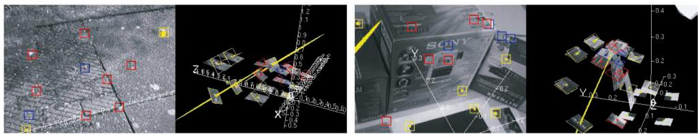<br />
Fig. 7. Results from real-time feature patch orientation estimation, for an outdoor scene containing one dominant plane and an indoor scene containing several. These views are captured from the system running in real time after several seconds of motion and show the initial hypothesized orientations with wire-frames and the current estimates with textured patches.</p>
<p><div class="math-block"><math xmlns="http://www.w3.org/1998/Math/MathML" display="block"><mrow><mtable><mtr><mtd columnalign="right"><mrow><mrow><mi mathvariant="monospace">H</mi></mrow><mo>&#x0003D;</mo><mrow><mi mathvariant="monospace">C</mi></mrow><mrow><mi mathvariant="monospace">R</mi></mrow><mo minsize="1.2em" maxsize="1.2em">[</mo><msup><mrow><mi mathvariant="bold">n</mi></mrow><mrow><mi>T</mi></mrow></msup><msub><mrow><mi mathvariant="bold">x</mi></mrow><mrow><mi>p</mi></mrow></msub><mrow><mi mathvariant="monospace">I</mi></mrow><mo>&#x02212;</mo><mrow><mi mathvariant="bold">t</mi></mrow><msup><mrow><mi mathvariant="bold">n</mi></mrow><mrow><mi>T</mi></mrow></msup><mo minsize="1.2em" maxsize="1.2em">]</mo><msup><mrow><mi mathvariant="monospace">C</mi></mrow><mrow><mo>&#x02212;</mo><mn>1</mn></mrow></msup><mo>&#x0002C;</mo></mrow></mtd></mtr></mtable></mrow></math><span style="float:right;color:var(--ink-40)">(ð12Þ)</span></div></p>
<p>where C is the camera’s calibration matrix, describing perspective projection or a local approximate perspective projection in our images with radial distortion, R and t describe the camera motion, n is the surface normal and <math xmlns="http://www.w3.org/1998/Math/MathML" display="inline"><mrow><msub><mrow><mi mathvariant="bold">x</mi></mrow><mrow><mi>p</mi></mrow></msub></mrow></math> is the image projection of the center of the patch (I is the <math xmlns="http://www.w3.org/1998/Math/MathML" display="inline"><mrow><mn>3</mn><mo>&#x000D7;</mo><mn>3</mn></mrow></math> identity matrix).</p>
<p>It is assumed that this prediction of appearance is sufficient for the current image position of the feature to be found using a standard exhaustive correlation search over the two image coordinates within an elliptical uncertainty region derived from the SLAM filter. The next step is to measure the change in warp between the predicted template and the current image. Rather than widening the exhaustive search to include all of the degrees of freedom of potential warps, having locked down the template’s 2D image position, we proceed with a more efficient probabilistic inverse-compositional gradient-descent image alignment step [49], [50] to search through the additional parameters, on the assumption that the change in warp will be small and that this search will find the globally best fit.</p>
<p>Fig. 6b displays graphically the processing steps in feature orientation estimation. When a new feature is added to the map, we initialize an estimate of its surface normal which is parallel to the current viewing direction, but with large uncertainty. We currently make the simplifying approximation that estimates of feature normals are only weakly correlated to those of camera and feature positions. Normal estimates are therefore not stored in the main SLAM state vector, but maintained in a separate two-parameter EKF for each feature.</p>
<p>Fig. 7 shows results from the patch orientation algorithm in two different scenes: an outdoor scene which contains one dominant plane and an indoor scene where several boxes present planes at different orientations. Over a period of several seconds of tracking in both cases, the orientations of most of mapped feature patches are recovered well.</p>
<p>In general terms, it is clear that orientation estimation only works well with patches which are large and have significant interesting texture over their area because, in this case, the image alignment operation can accurately estimate the warping. This is a limitation as far as estimating an accurate normal vector at every feature location since many features have quite simple texture patterns like a black on white corner, where full warp estimation is badly constrained. The scenes in our examples are somewhat artificial in that both contain large planar areas with significant flat texture.</p>
<p>However, it should be remembered that the current motivation for estimating feature orientations in our work is to improve the range of camera motion over which each long-term landmark will be measurable. Those features for which it is difficult to get an accurate normal estimate are exactly those where doing so is less important in the first place, since they exhibit a natural degree of viewpointinvariance in their appearance. It does not matter if the normal estimate for these features is incorrect because it will still be possible to match them. We see this work on estimating feature surface orientation as part of a general direction toward recovering more complete scene geometry from a camera moving in real time.</p>
<h2>4 RESULTS: INTERACTIVE AUGMENTED REALITY</h2>
<p>Before presenting a robotics application of MonoSLAM in Section 5, in this section we give results from the use of our algorithm in an augmented reality scenario, as virtual objects are inserted interactively into live video. We show how virtual furniture can be stably added to a 30Hz image stream captured as a hand-held camera is moved around a room. Fig. 8 gives a storyboard for this demonstration, which is featured in the video submitted with this paper.</p>
<p>In Augmented Reality (AR), computer graphics are added to images of the real world from a camera to generated a composite scene. A convincing effect is created if the graphics move in the image as if they are anchored to the 3D scene observed by the camera. For this to be achieved, the motion of the camera must be accurately known—its location can then be fed into a standard 3D graphics engine such as OpenGL which will then render the graphics correctly on top of the real images. Here, we use MonoSLAM to estimate the hand-held camera’s motion in real-time from the live image stream and feed this directly into the rendering engine.</p>
<p>There are various ways to recover the motion of a moving camera which have been used for augmented reality, usually featuring additional hardware such as magnetic or ultrasonic sensors attached to the camera. It is appealing to achieve camera tracking using only the images from the actual moving camera for motion estimation, but previous approaches have either operated offline, such as [3] which is used in movie postproduction, or required prior knowledge about the structure of the observed scene, either via the placement of fiducial targets or a prior map-learning stage (see [51] for a review). Our approach here is the first which can achieve convincing real time and drift-free AR as the camera moves through a scene it observes for the first time.</p>
<p>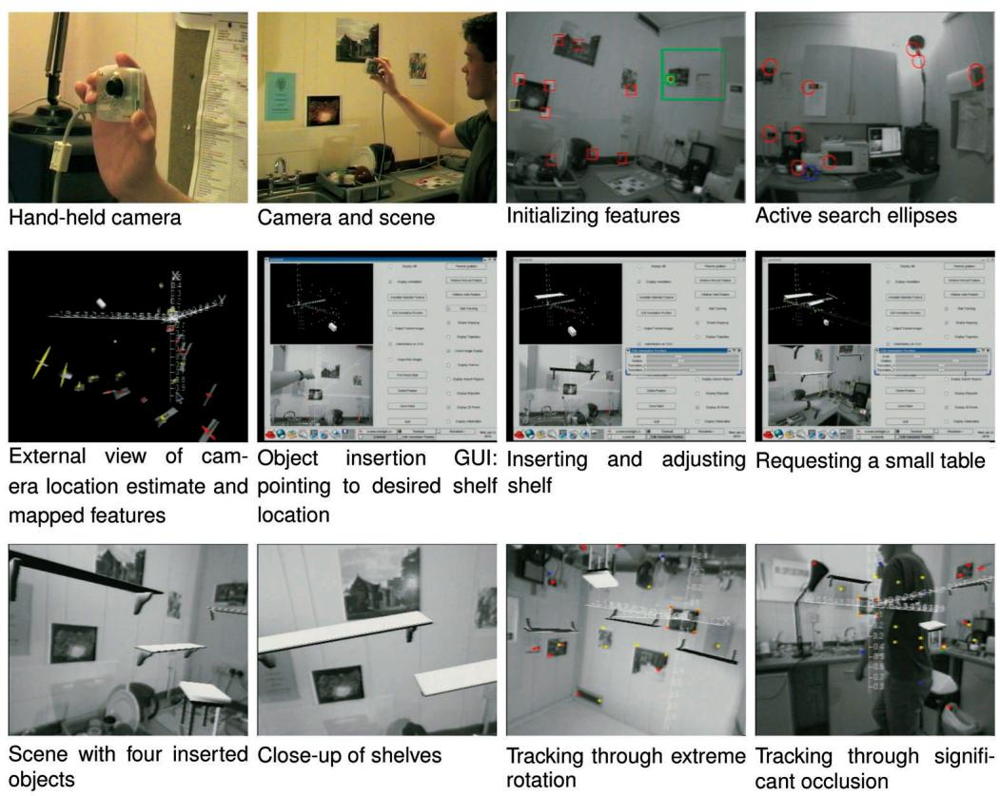<br />
Fig. 8. Frames from a demonstration of real-time augmented reality using MonoSLAM, all acquired directly from the system running in real time at 30 Hz. Virtual furniture is inserted into the images of the indoor scene observed by a hand-held camera. By clicking on features from the SLAM map displayed with real-time graphics, 3D planes are defined to which the virtual objects are attached. These objects then stay clamped to the scene in the image view as the camera continues to move. We show how the tracking is robust to fast camera motion, extreme rotation, and significant occlusion.</p>
<p>In implementation, the linear acceleration noise components in <math xmlns="http://www.w3.org/1998/Math/MathML" display="inline"><mrow><msub><mrow><mi mathvariant="monospace">P</mi></mrow><mrow><mi>n</mi></mrow></msub></mrow></math> were set to a standard deviation of 10ms<sup>2</sup> (1 acceleration due to gravity), and angular components with a standard deviation of 6rads<sup>2</sup>. These magnitudes of acceleration empirically describe the approximate dynamics of a camera moved quickly but smoothly in the hand (the algorithm cannot cope with very sudden, jerky movement). The camera used was a low-cost IEEE 1394 webcam with a wide angle lens, capturing at 30 Hz. The software-controlled shutter and gain controls were set to remove most of the effects of motion blur but retain a high-contrast image—this is practically achievable in a normal bright room.</p>
<p>Following initialization from a simple target as in Fig. 2a, the camera was moved to observe most of the small room in which the experiment was carried out, dynamically mapping a representative set of features within a few seconds. Tracking was continued over a period of several minutes (several thousand frames) with SLAM initializing new features as necessary—though of course little new initialization was needed as previously-seen areas were revisited. There is little doubt that the system would run for much longer periods of time without problems because once the uncertainty in the mapped features becomes small they are very stable and lock the map into a drift-free state. Note that once sufficient nearby features are mapped it is possible to remove the initialization target from the wall completely.</p>
<p>Augmented reality was achieved with some interaction from a human user, who was presented with displays of both the image stream with the tracked features highlighted and of the estimated position of the camera and features within a 3D display whose viewpoint could be manipulated. By selecting three of the mapped features with a mouse, by clicking in either of the two displays, the user defined a plane to which a virtual object could be attached. In this demonstration, the objects were items of virtual furniture to be added to the indoor scene—perhaps as in a virtual “kitchen fitting” application—and four objects were added to three different planes in the scene corresponding to two vertical walls and a counter-top surface.</p>
<p>In general terms in this scenario, the algorithm gives robust real-time performance within a small room with relatively few constraints on the movement of the camera and arbitrarily long time periods of localization are routinely achievable. Clearly, situations where no useful features are found in the field of view (when the camera faces a blank wall or ceiling) cannot be coped with, although the tracking will regularly survive periods when as few as two or three features are visible, the localization uncertainty growing bigger during these times, but good tracking recaptured once more features come back into view.</p>
<p>Small and large loops are routinely and seamlessly closed by the system. A rotational movement of the camera eptember 16,2026 at 03:26:09 UTC from IEEE Xplore. Restrictions apply.</p>
<p>to point into a new unobserved part of the scene and then return would lead to a small loop closure, tying the newly initialized features in the unobserved region to the accurate part of the map, whereas a translational motion right around the room would require larger loop closure. The active feature selection mechanism (Section 3.5) leads to particularly satisfactory behavior in loop closing: Its desire to make measurements that add the most information to the map by maximally reducing uncertainty demands reobservation of features which come back into view after periods of neglect. The <math xmlns="http://www.w3.org/1998/Math/MathML" display="inline"><mrow><msub><mrow><mi mathvariant="sans-serif">S</mi></mrow><mrow><mi>i</mi></mrow></msub></mrow></math> innovation covariance scores of these features are much higher than nearby features which have been recently measured due to the increase in uncertainty in their positions relative to the camera. In particular, small loops are closed immediately whenever possible, reducing that larger growth in uncertainty which could cause problems with closing bigger loops.</p>
<h2>5 RESULTS: HUMANOID ROBOT SLAM</h2>
<p>In this section, we present the use of MonoSLAM to provide real-time SLAM for one of the leading humanoid robot platforms, HRP-2 [52] as it moves around a cluttered indoor workspace.</p>
<p>Most advanced research humanoids have vision systems, but there have been only limited attempts at vision-based mapping and localization. Takaoka et al. [53] presented interesting results using stereo vision and a visual odometry approach to estimate the motion of a humanoid while building a dense 3D reconstruction of the cluttered floor near the robot. The local motion estimation was good, but this approach lacks the ability to close loops and will lead to drift over time with repeated motion. Sabe et al. [54] have used occupancy grid mapping and plane detection with stereo to detect free-space areas in front a miniature humanoid, but relied on odometry (or in other work artificial floor markers) for localization so this was also not true SLAM.</p>
<p>Using the MonoSLAM algorithm, we build online only a sparse map of point landmarks, rather than the dense representations of [53] or [54], and show that despite the challenges presented by high-acceleration 3D motion and we can form a persistent map which permits drift-free real-time localization over a small area. Typical humanoid activities of the near future (during some kind of handling or service task for instance) will involve agile but repeated movement within a small area such as a single room. The important requirement is that localization and mapping should be repeatable so that uncertainty in the robot’s position does not increase with time during these repeated movements.</p>
<h2>5.1 Vision</h2>
<p>As standard, HRP-2 is fitted with a high-performance forward-looking trinocular camera rig, providing the capability to make accurate 3D measurements in a focused observation area close in front of the robot, suitable for grasping or interaction tasks. Since it has been shown that by contrast a wide field of view is advantageous for localization and mapping, for this and other related work it was decided to equip HRP-2 with an additional wide-angle camera (field of view around 90 degrees) and use output from only this camera for SLAM. The wide angle camera was calibrated with a one parameter radial distortion model as in Section 3.5.</p>
<p>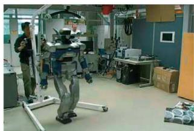<br />
Fig. 9. HRP-2 walking in a circle. The robot is walking autonomously and tether-free with SLAM processing on-board and a wireless Ethernet link to a control workstation. The support cradle seen is only for safety purposes.</p>
<p>Since the robot started its motions from a position observing a far wall, a mixture of natural and artificially placed features in measured positions mostly on this wall were used for SLAM initialization rather than the standard target.</p>
<h2>5.2 Gyro</h2>
<p>Along with other proprioceptive sensors, HRP-2 is equipped with a 3-axis gyro in the chest which reports measurements of the body’s angular velocity at 200 Hz. In the humanoid SLAM application, although it was quite possible to progress with vision-only MonoSLAM, the ready availability of this extra information argued strongly for its inclusion in SLAM estimation, and it played a role in reducing the rate of growth of uncertainty around looped motions.</p>
<p>We sampled the gyro at the 30 Hz rate of vision for use within the SLAM filter. We assessed the standard deviation of each element of the angular velocity measurement to be 0:01rads<sup>1</sup>. Since our single camera SLAM state vector contains the robot’s angular velocity expressed in the frame of reference of the robot, we can incorporate these measurements in the EKF directly as an “internal measurement” directly of the robot’s own state—an additional Kalman update step before visual processing.</p>
<h2>5.3 Results</h2>
<p>We performed an experiment which was a real SLAM test, in which the robot was programmed to walk in a circle of radius 0.75 m (Fig. 9). This was a fully exploratory motion, involving observation of new areas before closing one large loop at the end of the motion. For safety and monitoring reasons, the motion was broken into five parts with short stationary pauses between them: First, a forward diagonal motion to the right without rotation in which the robot put itself in position to start the circle and then four 90 degree arcing turns to the left where the robot followed a circular path, always walking tangentially. The walking was at HRP-2’s standard speed and the total walking time was around 30 seconds (though the SLAM system continued to track continuously at 30 Hz even while the robot paused).</p>
<p>Fig. 10 shows the results of this experiment. Classic SLAM behavior is observed, with a steady growth in the uncertainty of newly-mapped features until an early feature can be eptember 16,2026 at 03:26:09 UTC from IEEE Xplore. Restrictions apply.</p>
<p>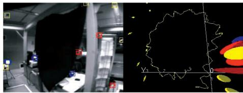</p>
<p>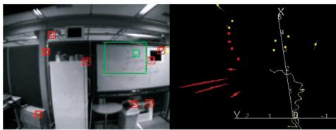<br />
(a)</p>
<p>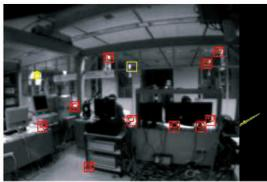</p>
<p>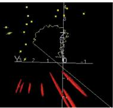</p>
<p>(c)<br />
(b)<br />
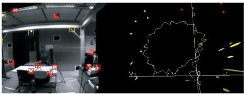<br />
(d)</p>
<p>Fig. 10. Snapshots from MonoSLAM as a humanoid robot walks in a circular trajectory of radius 0.75 m. The yellow trace is the estimated robot trajectory, and ellipses show feature location uncertainties, with color coding as in Fig. 1a. The uncertainty in the map can be seen growing until the loop is closed and drift corrected. (a) Early exploration and first turn. (b) Mapping back all and greater uncertainty. (c) Just before loop close, maximum uncertainty. (d) End of circle with closed loop and drift corrected.<br />
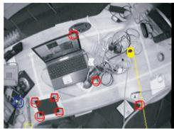<br />
(a)</p>
<p>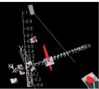</p>
<p>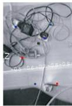<br />
(b)<br />
Fig. 11. Ground truth characterization experiment. (a) The camera flies over the desktop scene with initialization target and rectangular track in view. (b) The track is followed around a corner with real-time camera trace in external view and image view augmented with coordinate axes. In both images, the hanging plumb-line can be seen, but does not significantly occlude the camera’s field of view.</p>
<p>reobserved, the loop closed and drift corrected. A large number of features are seen to swing into better estimated positions simultaneously thanks to the correlations stored in the covariance matrix. This map of features is now suitable for long-term use, and it would be possible to complete any number of loops without drift in localization accuracy.</p>
<h2>6 SYSTEM DETAILS</h2>
<h2>6.1 System Characterization against Ground Truth</h2>
<p>An experiment was conducted to assess the accuracy of camera localization estimation within a typical environment. The camera, motion model parameters, and 30 Hz frame-rate of the experiment were as in the Interactive Augmented Reality implementation of Section 4. A horizontal desktop cluttered with various objects was marked out with a precisely measured rectangular track and the standard initialization target of Section 3.3 located in one corner, defining the origin and orientation of the world coordinate frame. Nothing else about the scene was known a priori.</p>
<p>A hand-held camera equipped with a plumb-line of known length was then moved such that a vertically hanging weight closely skimmed the track (Fig. 11). In this way, the ground truth 3D coordinates of the camera could be accurately known (to an assessed 1 cm precision) as it arrived in sequence at the four corner “way-points.”</p>
<p>and paused one by one at positions over the four corners of the rectangle. The following table gives the ground truth coordinates of the camera at the four corners followed by averaged estimated values from MonoSLAM over several looped revisits. The  variation values reported indicate the standard deviations of the sampled estimated values.</p>
<table><tr><td rowspan=1 colspan=3>Ground Truth (m)</td><td rowspan=1 colspan=3>Estimated (m)</td></tr><tr><td rowspan=1 colspan=1>X</td><td rowspan=1 colspan=1>y</td><td rowspan=1 colspan=1>Z</td><td rowspan=1 colspan=1>X</td><td rowspan=1 colspan=1>y</td><td rowspan=1 colspan=1>Z</td></tr><tr><td rowspan=4 colspan=1>0.00-1.00-1.000.00</td><td rowspan=1 colspan=1>0.00</td><td rowspan=1 colspan=1>-0.62</td><td rowspan=1 colspan=1>0.00±0.01</td><td rowspan=2 colspan=1>0.01±0.010.06±0.02</td><td rowspan=4 colspan=1>0.64±0.010.63±0.020.66±0.020.64±0.02</td></tr><tr><td rowspan=2 colspan=1>0.000.50</td><td rowspan=1 colspan=1>-0.62</td><td rowspan=1 colspan=1>−0.93±0.03</td></tr><tr><td rowspan=1 colspan=1>-0.62</td><td rowspan=1 colspan=1>-0.98±0.03</td><td rowspan=1 colspan=1>0.46±0.02</td></tr><tr><td rowspan=1 colspan=1>0.50</td><td rowspan=1 colspan=1>-0.62</td><td rowspan=1 colspan=1>0.01±0.01</td><td rowspan=1 colspan=1>0.47±0.02</td></tr></table>

<p>These figures show that on this “tabletop” scale of motion, MonoSLAM typically gives localization results accurate to a few centimeters, with “jitter” levels on the order of 1-2 cm. Some coordinates, such as the 0.93 mean x-value reported at the second way-point, display consistent errors larger than the jitter level, which persist during loops although reducing slowly on each revisit (in our experiment by around 1 cm per loop) as probabilistic SLAM gradually pulls the whole map into consistency.</p>
<h2>6.2 Processing Requirements</h2>
<p>Following a short initial motion of a few seconds during which an initial map was built, the camera was moved to</p>
<p>On a 1.6 GHz Pentium M processor, a typical breakdown of the processing time required at each frame at 30Hz (such ptember 16,2026 at 03:26:09 UTC from IEEE Xplore. Restrictions apply.</p>
<p>that 33 ms is available for processing each image) is as follows:</p>
<table><tr><td>Image loading and administration Image correlation searches Kalman Filter update Feature initialization search Graphical rendering</td><td>2 ms 3 ms 5 ms 4 ms 5 ms</td></tr><tr><td>Total</td><td>19 ms</td></tr></table>

<p>This indicates that 30 Hz performance is easily achieved —in fact, this type of safe margin is desirable since processing time fluctuates from frame to frame and dropped frames should be avoided whenever possible. We see however that doubling the frequency of operation to 60 Hz should be possible in the very near future if the graphical rendering were simplified or perhaps performed at a lower update rate.</p>
<h2>6.3 Software</h2>
<p>The C++ library SceneLib in which the systems described in this paper are built, including example real-time Mono-SLAM applications, is available as an open source project under the LGPL license from the Scene homepage at http://www.doc.ic.ac.uk/\~ajd/Scene/.</p>
<h2>6.4 Movies</h2>
<p>Videos illustrating the results in this paper can be obtained from the following files, all available on the Web in the directory: http://www.doc.ic.ac.uk/\~ajd/Movies/.</p>
<ol>
<li>
<p>kitchen.mp4.avi (basic method and augmented reality),</p>
</li>
<li>
<p>CircleHRP2.mpg (humanoid external view), and</p>
</li>
<li>
<p>hrploopclose.mpg (humanoid MonoSLAM output).</p>
</li>
</ol>
<h2>7 CONCLUSIONS</h2>
<p>In this paper, we have explained MonoSLAM, a real-time algorithm for simultaneous localization and mapping with a single freely-moving camera. The chief tenets of our approach are probabilistic mapping, motion modeling and active measurement and mapping of a sparse map of high-quality features. Efficiency is provided by active feature search, ensuring that no image processing effort is wasted—this is truly a Bayesian, “top-down” approach. We have presented experimental implementations which demonstrate the wide applicability of the algorithm, and hope that it will have an impact in application areas including both low-cost and advanced robotics, wearable computing, augmented reality for industry and entertainment and user interfaces.</p>
<p>In future work, we plan to continue to improve the performance of the algorithm to cope with larger environments (indoors and outdoors), more dynamic motions, and more complicated scenes with significant occlusions, complicated objects and changing lighting conditions to create genuinely practical systems. We will maintain our focus on hard real-time operation, commodity cameras, and minimal assumptions.</p>
<p>This work will involve several strands. To increase the dynamic performance of the algorithm, and be able to cope with even faster motion than currently, a promising possibility is to investigate cameras which can capture at rates greater than 30 Hz. An interesting aspect of our active search image processing is that a doubling in frame-rate would not imply a doubling of image processing effort as in bottom-up feature detection schemes (see [45]) because search regions would become correspondingly smaller due to reduced motion uncertainty. There are currently CMOS IEEE 1394 cameras which offer 100 Hz capture at full resolution and even higher rates in programmable subwindows—a technology our active image search would be well-suited to benefit from. We are keen to work with such cameras in the near future.</p>
<p>There will certainly be a payoff for developing the sparse maps currently generated into denser representations from which to reason more completely about the geometry of the environment, initially by attempting to detect higher-order entities such as surfaces. Our work on feature patch orientation estimation gives a strong hint that this will be achievable and, therefore, we should be able to build more complete but more efficient scene representations, but maintain real-time operation. These efficient high-order maps may give our SLAM system a human-like ability to quickly capture an idea of the basic shape of a room.</p>
<p>Finally, to extend the algorithm to very large-scale environments, some type of submapping strategy certainly seems appropriate, though as discussed earlier it remains unclear how maps of visual features can be cleanly divided into meaningful subblocks. As shown in other work on submaps (e.g., [20]), a network of accurate small scale maps can be very successfully joined by a relatively loose set of estimated transformations as long as there is the ability to “map-match” submaps in the background. This is closely related to being able to solve the “lost robot” problem of localizing against a known map with only a weak position prior, and has proven relatively straightforward with 2D laser data. With vision-only sensing this type of matching can be achieved with invariant visual feature types like SIFT [35] (an idea used by Newman and Ho for loop-closing in a system with both laser and vision [55]), or perhaps more interestingly in our context by matching higher-level scene features such as gross 3D surfaces.</p>
<h2>ACKNOWLEDGMENTS</h2>
<p>This work was primarily performed while A.J. Davison, I.D. Reid, and N.D. Molton worked together at the Active Vision Laboratory, University of Oxford. The authors are very grateful to David Murray, Ben Tordoff, Walterio Mayol, Nobuyuki Kita, and others at Oxford, AIST and Imperial College London for discussions and software collaboration. They would like to thank Kazuhito Yokoi at JRL for support with HRP-2. This research was supported by EPSRC grants GR/R89080/01 and GR/T24685, an EPSRC Advanced Research Fellowship to AJD, and CNRS/AIST funding at JRL.</p>
<h2>REFERENCES</h2>
<p>[1] A.W. Fitzgibbon and A. Zisserman, “Automatic Camera Recovery for Closed or Open Image Sequences,” Proc. European Conf. Computer Vision, pp. 311-326, June 1998.</p>
<p>[2] M. Pollefeys, R. Koch, and L.V. Gool, “Self-Calibration and Metric Reconstruction in Spite of Varying and Unknown Internal Camera Parameters,” Proc. Sixth Int’l Conf. Computer Vision, pp. 90-96, 1998.</p>
<p>[3] “2d3 Web Based Literature,” URL http://www.2d3.com/, 2005.</p>
<p>[4] A. Rahimi, L.P. Morency, and T. Darrell, “Reducing Drift in Parametric Motion Tracking,” Proc. Eighth Int’l Conf. Computer Vision, pp. 315-322, 2001.</p>
<p>[5] A.J. Davison, “Real-Time Simultaneous Localisation and Mapping with a Single Camera,” Proc. Ninth Int’l Conf. Computer Vision, 2003.</p>
<p>[6] A.J. Davison, Y.G. Cid, and N. Kita, “Real-Time 3D SLAM with Wide-Angle Vision,” Proc. IFAC Symp. Intelligent Autonomous Vehicles, July 2004.</p>
<p>[7] N.D. Molton, A.J. Davison, and I.D. Reid, “Locally Planar Patch Features for Real-Time Structure from Motion,” Proc. 15th British Machine Vision Conf., 2004.</p>
<p>[8] C.G. Harris and J.M. Pike, “3D Positional Integration from Image Sequences,” Proc. Third Alvey Vision Conf., pp. 233-236, 1987.</p>
<p>[9] N. Ayache, Artificial Vision for Mobile Robots: Stereo Vision and Multisensory Perception. MIT Press, 1991.</p>
<p>[10] P.A. Beardsley, I.D. Reid, A. Zisserman, and D.W. Murray, “Active Visual Navigation Using Non-Metric Structure,” Proc. Fifth Int’l Conf. Computer Vision, pp. 58-65, 1995.</p>
<p>[11] R. Smith, M. Self, and P. Cheeseman, “A Stochastic Map for Uncertain Spatial Relationships,” Proc. Fourth Int’l Symp. Robotics Research, 1987.</p>
<p>[12] P. Moutarlier and R. Chatila, “Stochastic Multisensory Data Fusion for Mobile Robot Location and Environement Modelling,” Proc. Int’l Symp. Robotics Research, 1989.</p>
<p>[13] J.J. Leonard, “Directed Sonar Sensing for Mobile Robot Navigation,” PhD dissertation, Univ. of Oxford, 1990.</p>
<p>[14] J. Manyika, “An Information-Theoretic Approach to Data Fusion and Sensor Management,” PhD dissertation, Univ. of Oxford, 1993.</p>
<p>[15] S. Betge´-Brezetz, P. He´bert, R. Chatila, and M. Devy, “Uncertain Map Making in Natural Environments,” Proc. IEEE Int’l Conf. Robotics and Automation, 1996.</p>
<p>[16] M. Csorba, “Simultaneous Localisation and Mapping,” PhD dissertation, Univ. of Oxford, 1997.</p>
<p>[17] J.A. Castellanos, “Mobile Robot Localization and Map Building: A Multisensor Fusion Approach,” PhD dissertation, Universidad de Zaragoza, Spain, 1998.</p>
<p>[18] A.J. Davison, “Mobile Robot Navigation Using Active Vision,” PhD dissertation, Univ. of Oxford, 1998.</p>
<p>[19] P.M. Newman, “On the Structure and Solution of the Simultaneous Localization and Map Building Problem,” PhD dissertation, Univ. of Sydney, 1999.</p>
<p>[20] M. Bosse, P. Newman, J. Leonard, M. Soika, W. Feiten, and S. Teller, “An Atlas Framework for Scalable Mapping,” Proc. IEEE Int’l Conf. Robotics and Automation, 2003.</p>
<p>[21] P.M. Newman and J.J. Leonard, “Consistent Convergent Constant Time SLAM,” Proc. Int’l Joint Conf. Artificial Intelligence, 2003.</p>
<p>[22] M. Montemerlo, S. Thrun, D. Koller, and B. Wegbreit, “FastSLAM: A Factored Solution to the Simultaneous Localization and Mapping Problem,” Proc. AAAI Nat’l Conf. Artificial Intelligence, 2002.</p>
<p>[23] P.M. Newman, J.J. Leonard, J. Neira, and J. Tardo´ s, “Explore and Return: Experimental Validation of Real Time Concurrent Mapping and Localization,” Proc. IEEE Int’l Conf. Robotics and Automation, pp. 1802-1809, 2002.</p>
<p>[24] K. Konolige and J.-S. Gutmann, “Incremental Mapping of Large Cyclic Environments,” Proc. Int’l Symp. Computational Intelligence in Robotics and Automation, 1999.</p>
<p>[25] S. Thrun, W. Burgard, and D. Fox, “A Real-Time Algorithm for Mobile Robot Mapping with Applications to Multi-Robot and 3D Mapping,” Proc. IEEE Int’l Conf. Robotics and Automation, 2000.</p>
<p>[26] J. Neira, M.I. Ribeiro, and J.D. Tardos, “Mobile Robot Localisation and Map Building Using Monocular Vision,” Proc. Int’l Symp. Intelligent Robotics Systems, 1997.</p>
<p>[27] A.J. Davison and D.W. Murray, “Mobile Robot Localisation Using Active Vision,” Proc. Fifth European Conf. Computer Vision, pp. 809- 825, 1998.</p>
<p>[28] A.J. Davison and D.W. Murray, “Simultaneous Localization and Map-Building Using Active Vision,” IEEE Trans. Pattern Analysis and Machine Intelligence, vol. 24, no. 7, pp. 865-880, July 2002.</p>
<p>[29] A.J. Davison and N. Kita, “3D Simultaneous Localisation and Map-Building Using Active Vision for a Robot Moving on Undulating Terrain,” Proc. IEEE Conf. Computer Vision and Pattern Recognition, 2001.</p>
<p>[30] I. Jung and S. Lacroix, “High Resolution Terrain Mapping Using Low Altitude Aerial Stereo Imagery,” Proc. Ninth Int’l Conf. Computer Vision, 2003.</p>
<p>[31] J.H. Kim and S. Sukkarieh, “Airborne Simultaneous Localisation and Map Building,” Proc. IEEE Int’l Conf. Robotics and Automation, pp. 406-411, 2003.</p>
<p>[32] M. Bosse, R. Rikoski, J. Leonard, and S. Teller, “Vanishing Points and 3D Lines from Omnidirectional Video,” Proc. IEEE Int’l Conf. Image Processing, 2002.</p>
<p>[33] R.M. Eustice, H. Singh, J.J. Leonard, M. Walter, and R. Ballard, “Visually Navigating the RMS Titanic with SLAM Information Filters,” Proc. Robotics: Science and Systems, 2005.</p>
<p>[34] R. Sim, P. Elinas, M. Griffin, and J.J. Little, “Vision-Based SLAM Using the Rao-Blackwellised Particle Filter,” Proc. IJCAI Workshop Reasoning with Uncertainty in Robotics, 2005.</p>
<p>[35] D.G. Lowe, “Object Recognition from Local Scale-Invariant Features,” Proc. Seventh Int’l Conf. Computer Vision, pp. 1150-1157, 1999.</p>
<p>[36] N. Karlsson, E.D. Bernardo, J. Ostrowski, L. Goncalves, P. Pirjanian, and M.E. Munich, “The vSLAM Algorithm for Robust Localization and Mapping,” Proc. IEEE Int’l Conf. Robotics and Automation, 2005.</p>
<p>[37] P.F. McLauchlan and D.W. Murray, “A Unifying Framework for Structure and Motion Recovery from Image Sequences,” Proc. Fifth Int’l Conf. Computer Vision, 1995.</p>
<p>[38] A. Chiuso, P. Favaro, H. Jin, and S. Soatto, ““MFm”: 3-D Motion from 2-D Motion Causally Integrated over Time,” Proc. Sixth European Conf. Computer Vision, 2000.</p>
<p>[39] D. Niste´r, O. Naroditsky, and J. Bergen, “Visual Odometry,” Proc. IEEE Conf. Computer Vision and Pattern Recognition, 2004.</p>
<p>[40] E. Foxlin, “Generalized Architecture for Simultaneous Localization, Auto-Calibration and Map-Building,” Proc. IEEE/RSJ Conf. Intelligent Robots and Systems, 2002.</p>
<p>[41] D. Burschka and G.D. Hager, “V-GPS(SLAM): Vision-Based Inertial System for Mobile Robots,” Proc. IEEE Int’l Conf. Robotics and Automation, 2004.</p>
<p>[42] E. Eade and T. Drummond, “Scalable Monocular SLAM,” Proc. IEEE Conf. Computer Vision and Pattern Recognition, 2006.</p>
<p>[43] J. Shi and C. Tomasi, “Good Features to Track,” Proc. IEEE Conf. Computer Vision and Pattern Recognition, pp. 593-600, 1994.</p>
<p>[44] R. Swaminathan and S.K. Nayar, “Nonmetric Calibration of Wide-Angle Lenses and Polycameras,” IEEE Trans. Pattern Analysis and Machine Intelligence, vol. 22, no. 10, pp. 1172-1178, 2000.</p>
<p>[45] A.J. Davison, “Active Search for Real-Time Vision,” Proc. 10th Int’l Conf. Computer Vision, 2005.</p>
<p>[46] J. Sola`, M. Devy, A. Monin, and T. Lemaire, “Undelayed Initialization in Bearing Only SLAM,” Proc. IEEE/RSJ Conf. Intelligent Robots and Systems, 2005.</p>
<p>[47] J.M.M. Montiel, J. Civera, and A.J. Davison, “Unified Inverse Depth Parametrization for Monocular SLAM,” Proc. Robotics: Science and Systems, 2006.</p>
<p>[48] H. Jin, P. Favaro, and S. Soatto, “A Semi-Direct Approach to Structure from Motion,” The Visual Computer, vol. 19, no. 6, pp. 377- 394, 2003.</p>
<p>[49] N.D. Molton, A.J. Davison, and I.D. Reid, “Parameterisation and Probability in Image Alignment,” Proc. Asian Conf. Computer Vision, 2004.</p>
<p>[50] S. Baker and I. Matthews, “Lucas-Kanade 20 Years on: A Unifying Framework: Part 1,” Int’l J. Computer Vision, vol. 56, no. 3, pp. 221- 255, 2004.</p>
<p>[51] V. Lepetit and P. Fua, “Monocular Model-Based 3D Tracking of Rigid Objects: A Survey,” Foundations and Trends in Computer Graphics and Vision, vol. 1, no. 1, pp. 1-89, Oct. 2005.</p>
<p>[52] K. Kaneko, F. Kanehiro, S. Kajita, H. Hirukawa, T. Kawasaki, M. Hirata, K. Akachi, and T. Isozumi, “Humanoid Robot HRP-2,” Proc. IEEE Int’l Conf. Robotics and Automation, 2004.</p>
<p>[53] Y. Takaoka, Y. Kida, S. Kagami, H. Mizoguchi, and T. Kanade, “3D Map Building for a Humanoid Robot by Using Visual Odometry,” Proc. IEEE Int’l Conf. Systems, Man, and Cybernetics, pp. 4444-4449, 2004.</p>
<p>[54] K. Sabe, M. Fukuchi, J.-S. Gutmann, T. Ohashi, K. Kawamoto, and T. Yoshigahara, “Obstacle Avoidance and Path Planning for Humanoid Robots Using Stereo Vision,” Proc. IEEE Int’l Conf. Robotics and Automation, 2004.</p>
<p>[55] P.M. Newman and K. Ho, “SLAM Loop-Closing with Visually Salient Features,” Proc. IEEE Int’l Conf. Robotics and Automation, 2005.</p>
<p></p>
<p>Andrew J. Davison read physics at the University of Oxford, receiving the BA degree in 1994. In his doctoral research in Oxford’s Robotics Research Group under the supervision of Professor David Murray, he developed one of the first robot SLAM systems using vision. On receiving the DPhil degree in 1998, he took up an EU Science and Technology Fellowship and spent two years at AIST in Japan, expanding his work on visual robot navigation. He returned to</p>
<p>further postdoctoral work with Dr. Ian Reid at Oxford in 2000, was awarded a five year EPSRC Advanced Research Fellowship in 2002, and moved to Imperial College London in 2005 to take up a lectureship. He continues to work on advancing the basic technology of real-time localization and mapping using vision while collaborating to apply these techniques in robotics and related areas.</p>
<p></p>
<p>Ian D. Reid received the BSc degree from the University of Western Australia in 1987, and came to Oxford University on a Rhodes Scholarship in 1988, where he received the DPhil degree in 1991 He is a reader in engineering science at the University of Oxford and a fellow of Exeter College. After a period as an EPSRC Advanced Research Fellow, he was appointed to his current post in 2000. His research concentrates on variety of problems within</p>
<p>computer vision, usually with an emphasis on real-time processing; in particular, he is interested in algorithms for visual tracking, visual control of active head/eye robotic platforms for surveillance and navigation, visual geometry and camera self-calibration, and human motion capture and activity recognition. He has published more than 80 papers on these topics. He is a member of the IEEE.</p>
<p>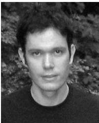</p>
<p>Nicholas D. Molton received the BEng degree in engineering at Brunel University and the DPhil degree in robotics at the University of Oxford. He has worked primarily in areas related to structure from motion and estimation both at the University of Oxford and at 2d3 Ltd in Oxford, and is currently working as a vision scientist with Imagineer Systems in Guildford, United Kingdom. His work has recently been focused on areas with application to the visual effects industry, and he shared the Emmy award won by 2d3 for technical contribution to television in 2002.</p>
<p></p>
<p>Olivier Stasse received the MSc degree in operations research (1996) and the PhD degree in intelligent systems (2000), both from University of Paris 6. He is assistant professor of computer science at the University of Paris 13. His research interests include humanoids robots as well as distributed and real-time computing applied to vision problems for complex robotic systems. He was involved in the humanoid project led by Professor Yasuo Kuniyoshi (Tokyo</p>
<p>University) from 1997 to 2000. From 2000 and 2003, he was at the Laboratoire de Transport et Traitement de l’Information (L2TI), and then joined the SONY robot-soccer team of the Laboratoire de Robotique de Versailles (LRV). Since 2003, he has been a member of the Joint French-Japanese Robotics Laboratory (JRL) in a secondment position as a CNRS researcher. He is a member of the IEEE and the IEEE Computer Society.</p>
<p>. For more information on this or any other computing topic, please visit our Digital Library at www.computer.org/publications/dlib.</p>
<div class="doc-foot">本页由 <code>md/2007_MonoSLAM__Real-Time_Single_Camera_SLAM.md</code> 预渲染生成。公式以 MathML 呈现，浏览器原生渲染，不依赖外部脚本或字体 CDN。</div>
</main>
</body>
</html>
